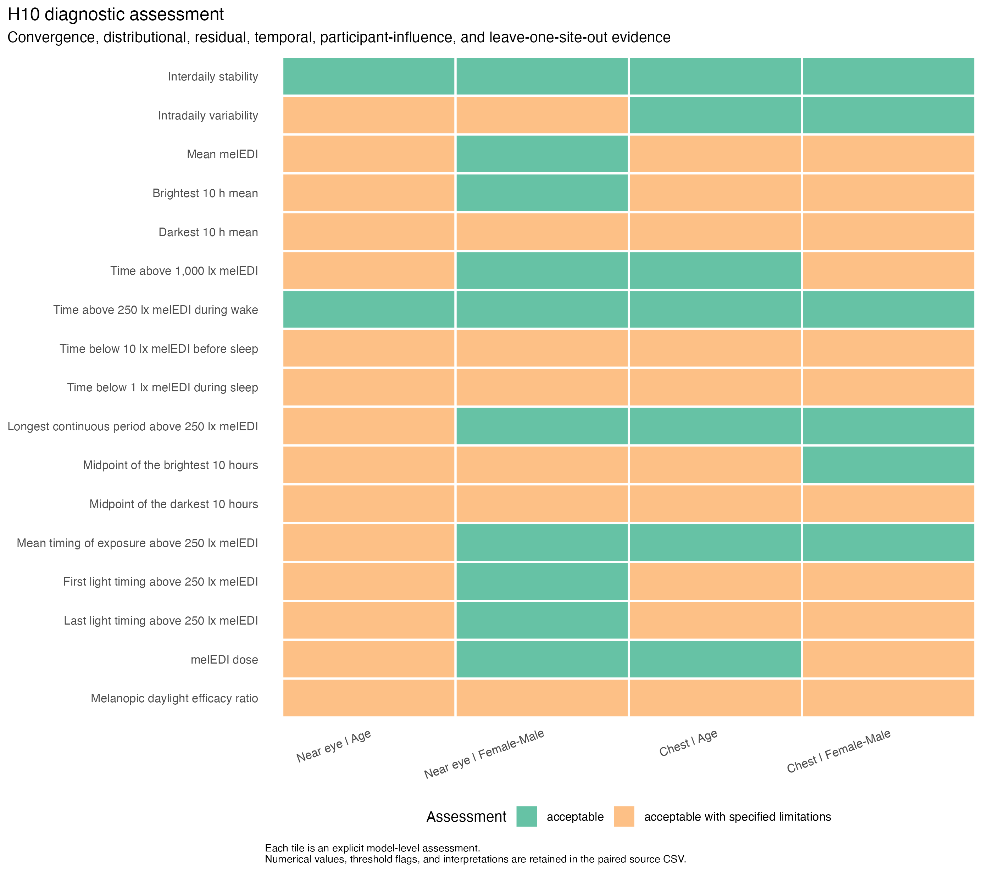
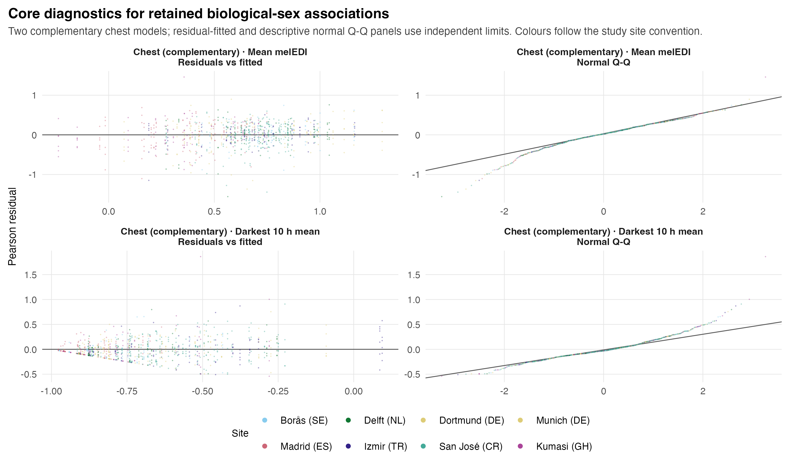

source("scripts/project.R")
analysis_setup()
source("scripts/pipeline/paths_io.R")
source("scripts/pipeline/p_value_display.R")
source("scripts/hypotheses/H10/h10_contract.R")
source("scripts/hypotheses/H10/h10_modeling.R")
root <- normalizePath(Sys.getenv("QUARTO_PROJECT_DIR", unset = getwd()))
producer <- "analyses/H10-age-sex.qmd"
options(stringsAsFactors = FALSE, scipen = 999, dplyr.summarise.inform = FALSE)
roots <- list(model_data = file.path(root,"results/intermediate/model_data/H10"), models = file.path(root,"results/models/H10"), diagnostics = file.path(root,"results/csv/diagnostics/H10"), tables = file.path(root,"results/tables/H10"), figures = file.path(root,"results/images/H10"), source_data = file.path(root,"results/csv/source_data/H10"))
invisible(lapply(roots, dir.create, recursive=TRUE, showWarnings=FALSE))
metadata <- list()
source("scripts/pipeline/multiplicity.R")
roots$sensitivity <- file.path(roots$diagnostics,"sensitivity")
dir.create(roots$sensitivity,recursive=TRUE,showWarnings=FALSE)
h10_write_csv <- function(data, path) {
write_csv_artifact(data, path, producer = producer)
invisible(path)
}
h10_write_rds <- function(object, path) {
write_rds_artifact(object, path, producer = producer)
invisible(path)
}H10: Age, measured biological sex, and personal light exposure
This analysis estimates age and measured biological-sex associations with 17 personal light-exposure metrics. It reports site-adjusted main effects, predictor-by-site interactions, sensor comparisons and preprocessing sensitivities.
Data and model guide
The participant information is linked to the 17 exposure metrics. Age is expressed per decade. Biological sex uses Male as the reference and Female as the comparison; gender is recorded separately and is not analysed here. Participant-day outcomes retain repeated days, while stability and variability have one outcome per participant.
Site-adjusted additive models estimate common age and biological-sex associations. Separate predictor-by-site comparisons test heterogeneity. Participant-day models include participant random intercepts, while participant-level Gaussian models use ordinary regression. Gaussian comparisons use maximum likelihood, with final mixed-model coefficients estimated by restricted maximum likelihood; Tweedie/log models use maximum likelihood. Practical effects are ratios, odds ratios or unit-specific differences, with clock differences expressed in minutes.
Age main effects, biological-sex main effects and their respective site interactions form four separate complete 17-metric FDR families for each dataset and placement. Interaction components are descriptive estimates rather than a new collection of site-level significance tests. The following sections show exact formulas, support, residuals, influence and sensitivity to matched placements, preprocessing, registered exclusions and metric definitions. Cross-sectional age associations do not identify individual ageing effects.
The executable sections below write fitted objects to results/models/H10/, reader tables to results/tables/H10/, and the supporting numerical and figure outputs under results/. Start with the calculations below or jump to findings and interpretation.
Setup
Shared helpers define the metric response scales, mixed-model fitting, contrasts and residual diagnostics. Age is expressed per decade and the sex contrast is Female minus Male.
Build the fitted samples
Join current metric values and participant demographics. Preserve participant-level versus participant-day analysis units and construct primary, alternative-preprocessing and matched-placement frames before fitting.
metric_registry <- h10_metric_registry()
comparison_registry <- h10_comparison_registry()
run_registry <- h10_primary_run_registry()
site_registry <- readr::read_csv(
file.path(root, "config/site_display_registry.csv"),
show_col_types = FALSE,
progress = FALSE
) |>
dplyr::arrange(.data$display_order)
site_levels <- site_registry$site
metric_display <- readr::read_csv(
file.path(root, "config/metric_display_registry.csv"),
show_col_types = FALSE,
progress = FALSE
) |>
dplyr::filter(.data$metric_id %in% metric_registry$metric_id) |>
dplyr::select(
.data$metric_id,
.data$manuscript_name,
.data$abbreviation,
.data$manuscript_category,
display_analysis_unit = .data$analysis_unit,
.data$display_unit,
.data$variant_label
)
metric_registry <- metric_registry |>
dplyr::left_join(
metric_display,
by = "metric_id",
relationship = "one-to-one"
)
if (
nrow(metric_registry) != 17L ||
any(is.na(metric_registry$manuscript_name)) ||
any(
gsub("-", "_", metric_registry$display_analysis_unit) !=
metric_registry$analysis_unit
)
) {
h10_abort("H10 metric display registry reconciliation failed")
}
h01_primary <- readRDS(file.path(root, "results/intermediate/model_data/H01.rds"))
h01_gap <- readRDS(file.path(
root,
"results/intermediate/model_data/H01/scenarios/alternative_preprocessing/H01.rds"
))
h10_write_csv(
metric_registry,
file.path(roots$model_data, "H10_metric_registry.csv")
)
h10_write_csv(
comparison_registry,
file.path(roots$model_data, "H10_comparison_registry.csv")
)
h10_write_csv(
run_registry,
file.path(roots$model_data, "H10_run_registry.csv")
)
demographics <- readRDS(file.path(
root,
"results/intermediate/model_data/normalized_inputs/demographics.rds"
)) |>
dplyr::transmute(
.data$site,
.data$Id,
age = as.numeric(.data$age),
biological_sex = as.character(.data$sex),
.data$employment_status
)
if (
anyDuplicated(demographics[c("site", "Id")]) ||
any(!demographics$biological_sex %in% c("Male", "Female")) ||
any(!is.finite(demographics$age))
) {
h10_abort("H10 demographic provenance or coding is not admissible")
}
h10_source_rows <- function(object, data_scenario, scenario) {
object$model_rows |>
dplyr::filter(
.data$scenario == .env$scenario,
.data$metric_id %in% metric_registry$metric_id,
.data$metric_estimable,
.data$scenario_estimable,
is.finite(.data$value)
) |>
dplyr::transmute(
data_scenario = data_scenario,
.data$placement,
.data$site,
.data$Id,
local_date = as.Date(.data$local_date),
.data$metric_id,
.data$analysis_unit,
value = as.numeric(.data$value),
.data$participant_days_contributing,
.data$metric_support_available,
.data$metric_support_valid_minutes,
.data$metric_support_expected_minutes,
.data$prepared_record_support_available,
.data$prepared_record_valid_melEDI_minutes,
.data$prepared_record_valid_illuminance_minutes
) |>
dplyr::left_join(
demographics,
by = c("site", "Id"),
relationship = "many-to-one"
) |>
dplyr::arrange(
.data$placement,
.data$metric_id,
.data$site,
.data$Id,
.data$local_date
)
}
all_rows <- dplyr::bind_rows(
h10_source_rows(h01_primary, "primary", "all_available"),
h10_source_rows(h01_gap, "gap_timing_unaware", "all_available")
)
paired_rows <- dplyr::bind_rows(
h10_source_rows(h01_primary, "primary", "paired_common_sample"),
h10_source_rows(h01_gap, "gap_timing_unaware", "paired_common_sample")
)
if (
nrow(all_rows) == 0L ||
nrow(paired_rows) == 0L ||
any(is.na(all_rows$age)) ||
any(is.na(all_rows$biological_sex)) ||
any(paired_rows$analysis_unit != "participant_day")
) {
h10_abort("H10 prepared model rows failed demographic or unit checks")
}
h10_write_rds(
list(
hypothesis_id = "H10",
all_available_rows = all_rows,
paired_common_rows = paired_rows,
demographics = demographics,
primary_prepared_metadata = h01_primary$metadata,
gap_prepared_metadata = h01_gap$metadata
),
file.path(roots$model_data, "H10_prepared_rows.rds")
)
h10_frame_summary <- function(frame) {
tibble::tibble(
observations = nrow(frame),
participants = dplyr::n_distinct(frame$participant_key),
participant_days = if (all(is.na(frame$local_date))) {
NA_integer_
} else {
nrow(frame)
},
contributing_participant_days = if (
all(is.na(frame$participant_days_contributing))
) {
NA_real_
} else {
sum(frame$participant_days_contributing, na.rm = TRUE)
},
metric_support_valid_hours = if (
all(is.na(frame$metric_support_valid_minutes))
) {
NA_real_
} else {
sum(frame$metric_support_valid_minutes, na.rm = TRUE) / 60
},
metric_support_expected_hours = if (
all(is.na(frame$metric_support_expected_minutes))
) {
NA_real_
} else {
sum(frame$metric_support_expected_minutes, na.rm = TRUE) / 60
},
sites = dplyr::n_distinct(frame$site),
female_participants = dplyr::n_distinct(
frame$participant_key[frame$biological_sex == "Female"]
),
male_participants = dplyr::n_distinct(
frame$participant_key[frame$biological_sex == "Male"]
),
age_min = min(frame$age),
age_max = max(frame$age)
)
}
model_frames <- list()
model_frame_rows <- list()
for (run_index in seq_len(nrow(run_registry))) {
run <- run_registry[run_index, , drop = FALSE]
for (metric_index in seq_len(nrow(metric_registry))) {
spec <- metric_registry[metric_index, , drop = FALSE]
source <- all_rows |>
dplyr::filter(
.data$data_scenario == run$data_scenario,
.data$placement == run$placement,
.data$metric_id == spec$metric_id
)
frame <- h10_prepare_model_frame(
source,
spec,
site_levels = site_levels,
sample_scenario = "all_available"
)
key <- paste(run$run_id, spec$metric_id, sep = "__")
model_frames[[key]] <- frame
context <- tibble::tibble(
run_id = run$run_id,
data_scenario = run$data_scenario,
placement = run$placement,
sample_scenario = run$sample_scenario,
analytical_role = run$analytical_role,
metric_order = spec$metric_order,
metric_id = spec$metric_id,
manuscript_name = spec$manuscript_name,
analysis_unit = spec$analysis_unit,
response_family = spec$response_family,
response_transform = spec$response_transform,
effect_scale = spec$effect_scale
)
model_frame_rows[[key]] <- dplyr::bind_cols(
context,
h10_frame_summary(frame)
)
}
}
model_frame_index <- dplyr::bind_rows(model_frame_rows) |>
dplyr::arrange(
.data$data_scenario,
.data$placement,
.data$metric_order
)
if (
nrow(model_frame_index) != 68L ||
any(model_frame_index$observations <= 0L) ||
any(model_frame_index$sites < 2L)
) {
h10_abort("H10 all-available model-frame registry is incomplete")
}
h10_write_csv(
model_frame_index,
file.path(roots$model_data, "H10_model_frame_index.csv")
)
h10_write_rds(
model_frames,
file.path(roots$model_data, "H10_model_frames.rds")
)
demographic_audit <- all_rows |>
dplyr::filter(.data$data_scenario == "primary") |>
dplyr::distinct(
.data$placement,
.data$site,
.data$Id,
.data$age,
.data$biological_sex,
.data$employment_status
) |>
dplyr::count(
.data$placement,
.data$site,
.data$biological_sex,
name = "participants"
) |>
dplyr::left_join(
all_rows |>
dplyr::filter(.data$data_scenario == "primary") |>
dplyr::distinct(
.data$placement,
.data$site,
.data$Id,
.data$age
) |>
dplyr::group_by(.data$placement, .data$site) |>
dplyr::summarise(
age_min = min(.data$age),
age_median = stats::median(.data$age),
age_max = max(.data$age),
.groups = "drop"
),
by = c("placement", "site"),
relationship = "many-to-one"
)
h10_write_csv(
demographic_audit,
file.path(roots$model_data, "H10_demographic_coding_and_site_cells.csv")
)
model_frame_index# A tibble: 68 × 23
run_id data_scenario placement sample_scenario analytical_role metric_order
<chr> <chr> <chr> <chr> <chr> <int>
1 gap_tim… gap_timing_u… chest all_available gap_timing_una… 1
2 gap_tim… gap_timing_u… chest all_available gap_timing_una… 2
3 gap_tim… gap_timing_u… chest all_available gap_timing_una… 3
4 gap_tim… gap_timing_u… chest all_available gap_timing_una… 4
5 gap_tim… gap_timing_u… chest all_available gap_timing_una… 5
6 gap_tim… gap_timing_u… chest all_available gap_timing_una… 6
7 gap_tim… gap_timing_u… chest all_available gap_timing_una… 7
8 gap_tim… gap_timing_u… chest all_available gap_timing_una… 8
9 gap_tim… gap_timing_u… chest all_available gap_timing_una… 9
10 gap_tim… gap_timing_u… chest all_available gap_timing_una… 10
# ℹ 58 more rows
# ℹ 17 more variables: metric_id <chr>, manuscript_name <chr>,
# analysis_unit <chr>, response_family <chr>, response_transform <chr>,
# effect_scale <chr>, observations <int>, participants <int>,
# participant_days <int>, contributing_participant_days <int>,
# metric_support_valid_hours <dbl>, metric_support_expected_hours <dbl>,
# sites <int>, female_participants <int>, male_participants <int>, …Fit the main and interaction models
For each metric and placement, fit the reduced, age, age-by-site, sex and sex-by-site models. Compare nested models using the declared likelihood procedure, then apply four separate 17-member Benjamini-Hochberg families per placement. Participant-day models include a participant random intercept.
h10_add_age_per_year <- function(effect, spec) {
if (effect$predictor != "age") {
return(
effect |>
dplyr::mutate(
estimate_practical_per_year = NA_real_,
conf_low_practical_per_year = NA_real_,
conf_high_practical_per_year = NA_real_
)
)
}
per_year <- h10_effect_transform(
effect$estimate_model / 10,
effect$conf_low_model / 10,
effect$conf_high_model / 10,
spec
)
effect |>
dplyr::mutate(
estimate_practical_per_year = per_year$estimate_practical,
conf_low_practical_per_year = per_year$conf_low_practical,
conf_high_practical_per_year = per_year$conf_high_practical
)
}
h10_effect_row <- function(bundle, frame, predictor, spec) {
model_name <- if (predictor == "age") "M_age" else "M_sex"
effect <- h10_coefficient_summary(
bundle$final_fits[[model_name]]$model,
predictor,
spec
) |>
h10_add_age_per_year(spec)
response_sd <- stats::sd(frame$response)
effect |>
dplyr::mutate(
response_model_scale_sd = response_sd,
standardized_estimate = .data$estimate_model / response_sd,
standardized_conf_low = .data$conf_low_model / response_sd,
standardized_conf_high = .data$conf_high_model / response_sd
) |>
dplyr::bind_cols(h10_frame_summary(frame))
}
model_bundles <- list()
fit_index_rows <- list()
model_test_rows <- list()
model_effect_rows <- list()
site_effect_rows <- list()
diagnostic_rows <- list()
diagnostic_plot_rows <- list()
influence_rows <- list()
for (run_index in seq_len(nrow(run_registry))) {
run <- run_registry[run_index, , drop = FALSE]
for (metric_index in seq_len(nrow(metric_registry))) {
spec <- metric_registry[metric_index, , drop = FALSE]
key <- paste(run$run_id, spec$metric_id, sep = "__")
frame <- model_frames[[key]]
message("H10 fit: ", run$run_id, " / ", spec$metric_id)
bundle <- h10_fit_bundle(frame, spec)
model_bundles[[key]] <- bundle
context <- tibble::tibble(
run_id = run$run_id,
data_scenario = run$data_scenario,
placement = run$placement,
sample_scenario = run$sample_scenario,
analytical_role = run$analytical_role,
metric_order = spec$metric_order,
metric_id = spec$metric_id,
manuscript_name = spec$manuscript_name,
abbreviation = spec$abbreviation,
manuscript_category = spec$manuscript_category,
analysis_unit = spec$analysis_unit,
response_family = spec$response_family,
response_transform = spec$response_transform,
effect_scale = spec$effect_scale,
display_unit = spec$display_unit
)
fit_rows <- h10_fit_index_rows(bundle)
fit_index_rows[[key]] <- dplyr::bind_cols(
context[rep(1L, nrow(fit_rows)), , drop = FALSE],
fit_rows
)
tests <- dplyr::bind_rows(lapply(
seq_len(nrow(comparison_registry)),
function(index) {
comparison <- comparison_registry[index, , drop = FALSE]
dplyr::bind_cols(
comparison |>
dplyr::select(
.data$comparison_order,
.data$comparison_id,
.data$predictor,
.data$comparison_role,
.data$reduced_model,
.data$full_model,
.data$adjustment_method,
.data$planned_n
),
h10_compare_models(
bundle$ml_fits[[comparison$reduced_model]],
bundle$ml_fits[[comparison$full_model]]
)
)
}
))
model_test_rows[[key]] <- dplyr::bind_cols(
context[rep(1L, nrow(tests)), , drop = FALSE],
tests
)
for (predictor in c("age", "biological_sex")) {
effect <- h10_effect_row(bundle, frame, predictor, spec)
effect_key <- paste(key, predictor, sep = "__")
model_effect_rows[[effect_key]] <- dplyr::bind_cols(context, effect)
interaction_name <- if (predictor == "age") {
"M_age_site"
} else {
"M_sex_site"
}
site_effect <- h10_site_effects(
bundle$final_fits[[interaction_name]]$model,
frame,
predictor,
spec
)
site_effect_rows[[effect_key]] <- dplyr::bind_cols(
context[rep(1L, nrow(site_effect)), , drop = FALSE],
site_effect
)
diagnostic <- h10_model_diagnostics(
bundle$final_fits[[if (predictor == "age") "M_age" else "M_sex"]],
frame,
spec
)
diagnostic_rows[[effect_key]] <- dplyr::bind_cols(
context,
tibble::tibble(predictor = predictor),
diagnostic
)
if (run$data_scenario == "primary") {
plot_data <- h10_diagnostic_plot_data(
bundle$final_fits[[
if (predictor == "age") "M_age" else "M_sex"
]]$model,
frame
)
diagnostic_plot_rows[[effect_key]] <- dplyr::bind_cols(
context[rep(1L, nrow(plot_data)), , drop = FALSE],
tibble::tibble(predictor = predictor)[
rep(1L, nrow(plot_data)),
,
drop = FALSE
],
plot_data
)
influence <- h10_delete_participant_influence(
bundle$final_fits[[
if (predictor == "age") "M_age" else "M_sex"
]]$model,
frame,
spec,
predictor,
effect
)
influence_rows[[effect_key]] <- dplyr::bind_cols(
context,
tibble::tibble(predictor = predictor),
influence
)
}
}
}
}
fit_index <- dplyr::bind_rows(fit_index_rows) |>
dplyr::arrange(
.data$data_scenario,
.data$placement,
.data$metric_order,
.data$fit_role,
.data$model_name
)
model_tests <- dplyr::bind_rows(model_test_rows) |>
dplyr::mutate(
family_id = paste(
.data$data_scenario,
dplyr::if_else(
.data$placement == "glasses",
dplyr::case_when(
.data$comparison_id == "AGE-MAIN" ~ "H10-F1-age-main",
.data$comparison_id == "SEX-MAIN" ~ "H10-F2-sex-main",
.data$comparison_id == "AGE-SITE" ~ "H10-F3-age-site-interaction",
TRUE ~ "H10-F4-sex-site-interaction"
),
dplyr::case_when(
.data$comparison_id == "AGE-MAIN" ~ "H10-C1-age-main",
.data$comparison_id == "SEX-MAIN" ~ "H10-C2-sex-main",
.data$comparison_id == "AGE-SITE" ~ "H10-C3-age-site-interaction",
TRUE ~ "H10-C4-sex-site-interaction"
)
),
sep = "__"
),
p_adjusted = NA_real_
)
for (family_id in unique(model_tests$family_id)) {
rows <- which(model_tests$family_id == family_id)
if (length(rows) != 17L || any(model_tests$planned_n[rows] != 17L)) {
h10_abort(
"Multiplicity family `%s` is not a complete 17-member family",
family_id
)
}
model_tests$p_adjusted[rows] <- adjust_p_family(
model_tests$p_raw[rows],
method = "BH",
n = 17L
)
}
model_tests <- model_tests |>
dplyr::mutate(
raw_significant = is.finite(.data$p_raw) & .data$p_raw <= 0.05,
adjusted_significant = is.finite(.data$p_adjusted) &
.data$p_adjusted <= 0.05,
p_raw_display = nh_format_p_value(.data$p_raw),
p_adjusted_display = nh_format_p_value(.data$p_adjusted)
) |>
dplyr::arrange(
.data$data_scenario,
.data$placement,
.data$comparison_order,
.data$metric_order
)
family_audit <- model_tests |>
dplyr::group_by(
.data$family_id,
.data$data_scenario,
.data$placement,
.data$comparison_id,
.data$planned_n,
.data$adjustment_method
) |>
dplyr::summarise(
registered_rows = dplyr::n(),
observed_raw_p = sum(is.finite(.data$p_raw)),
observed_adjusted_p = sum(is.finite(.data$p_adjusted)),
raw_significant_n = sum(.data$raw_significant),
adjusted_significant_n = sum(.data$adjusted_significant),
complete_17_member_family = .data$registered_rows == 17L,
independent_recalculation_matches = isTRUE(all.equal(
.data$p_adjusted,
stats::p.adjust(.data$p_raw, method = "BH", n = 17L)
)),
.groups = "drop"
)
if (
any(
!family_audit$complete_17_member_family |
!family_audit$independent_recalculation_matches
)
) {
h10_abort("An H10 multiplicity family failed independent verification")
}
model_effects <- dplyr::bind_rows(model_effect_rows) |>
dplyr::arrange(
.data$data_scenario,
.data$placement,
.data$predictor,
.data$metric_order
)
site_effects <- dplyr::bind_rows(site_effect_rows) |>
dplyr::left_join(
site_registry |>
dplyr::select(
.data$site,
site_display_order = .data$display_order,
site_display_name = .data$display_name,
site_color_hex = .data$color_hex
),
by = "site",
relationship = "many-to-one"
) |>
dplyr::arrange(
.data$data_scenario,
.data$placement,
.data$predictor,
.data$metric_order,
.data$weighting,
.data$site_display_order
)
model_diagnostics <- dplyr::bind_rows(diagnostic_rows) |>
dplyr::arrange(
.data$data_scenario,
.data$placement,
.data$predictor,
.data$metric_order
)
diagnostic_plot_data <- dplyr::bind_rows(diagnostic_plot_rows)
participant_influence <- dplyr::bind_rows(influence_rows)
h10_write_rds(
list(
hypothesis_id = "H10",
formula_contract = list(
participant = h10_formula_set("participant"),
participant_day = h10_formula_set("participant_day")
),
model_bundles = model_bundles
),
file.path(roots$models, "H10_primary_and_gap_model_bundles.rds")
)
h10_write_csv(
fit_index,
file.path(roots$models, "H10_fit_index.csv")
)
h10_write_csv(model_tests, file.path(roots$tables, "H10_model_tests.csv"))
h10_write_csv(
family_audit,
file.path(roots$tables, "H10_multiplicity_family_audit.csv")
)
h10_write_csv(
model_effects,
file.path(roots$tables, "H10_model_effects.csv")
)
h10_write_csv(
site_effects,
file.path(roots$tables, "H10_site_specific_effects.csv")
)
h10_write_csv(
model_diagnostics,
file.path(roots$diagnostics, "H10_model_diagnostics.csv")
)
h10_write_csv(
diagnostic_plot_data,
file.path(roots$source_data, "H10_primary_diagnostic_plot_data.csv")
)
h10_write_csv(
participant_influence,
file.path(roots$diagnostics, "H10_participant_deletion_influence.csv")
)
model_tests# A tibble: 272 × 34
run_id data_scenario placement sample_scenario analytical_role metric_order
<chr> <chr> <chr> <chr> <chr> <int>
1 gap_tim… gap_timing_u… chest all_available gap_timing_una… 1
2 gap_tim… gap_timing_u… chest all_available gap_timing_una… 2
3 gap_tim… gap_timing_u… chest all_available gap_timing_una… 3
4 gap_tim… gap_timing_u… chest all_available gap_timing_una… 4
5 gap_tim… gap_timing_u… chest all_available gap_timing_una… 5
6 gap_tim… gap_timing_u… chest all_available gap_timing_una… 6
7 gap_tim… gap_timing_u… chest all_available gap_timing_una… 7
8 gap_tim… gap_timing_u… chest all_available gap_timing_una… 8
9 gap_tim… gap_timing_u… chest all_available gap_timing_una… 9
10 gap_tim… gap_timing_u… chest all_available gap_timing_una… 10
# ℹ 262 more rows
# ℹ 28 more variables: metric_id <chr>, manuscript_name <chr>,
# abbreviation <chr>, manuscript_category <chr>, analysis_unit <chr>,
# response_family <chr>, response_transform <chr>, effect_scale <chr>,
# display_unit <chr>, comparison_order <int>, comparison_id <chr>,
# predictor <chr>, comparison_role <chr>, reduced_model <chr>,
# full_model <chr>, adjustment_method <chr>, planned_n <int>, …model_effects# A tibble: 136 × 53
run_id data_scenario placement sample_scenario analytical_role metric_order
<chr> <chr> <chr> <chr> <chr> <int>
1 gap_tim… gap_timing_u… chest all_available gap_timing_una… 1
2 gap_tim… gap_timing_u… chest all_available gap_timing_una… 2
3 gap_tim… gap_timing_u… chest all_available gap_timing_una… 3
4 gap_tim… gap_timing_u… chest all_available gap_timing_una… 4
5 gap_tim… gap_timing_u… chest all_available gap_timing_una… 5
6 gap_tim… gap_timing_u… chest all_available gap_timing_una… 6
7 gap_tim… gap_timing_u… chest all_available gap_timing_una… 7
8 gap_tim… gap_timing_u… chest all_available gap_timing_una… 8
9 gap_tim… gap_timing_u… chest all_available gap_timing_una… 9
10 gap_tim… gap_timing_u… chest all_available gap_timing_una… 10
# ℹ 126 more rows
# ℹ 47 more variables: metric_id <chr>, manuscript_name <chr>,
# abbreviation <chr>, manuscript_category <chr>, analysis_unit <chr>,
# response_family <chr>, response_transform <chr>, effect_scale <chr>,
# display_unit <chr>, predictor <chr>, estimand <chr>, term <chr>,
# estimate_model <dbl>, standard_error <dbl>, conf_low_model <dbl>,
# conf_high_model <dbl>, interval_distribution <chr>, …Compare common samples and preregistered exclusions
Repeat main-effect estimates on exact matched sensor samples and exact common primary/alternative rows. Apply the documented age and employment exclusion criteria as a separate sensitivity.
h10_fit_main_sensitivity <- function(frame, spec, predictor) {
formula_name <- if (predictor == "age") "M_age" else "M_sex"
formulas <- h10_formula_set(spec$analysis_unit)
reduced <- h10_fit_model(frame, formulas$M0, spec, reml = FALSE)
full_ml <- h10_fit_model(
frame,
formulas[[formula_name]],
spec,
reml = FALSE
)
comparison <- h10_compare_models(reduced, full_ml)
final <- if (
spec$response_family == "gaussian" &&
spec$analysis_unit == "participant_day"
) {
h10_fit_model(
frame,
formulas[[formula_name]],
spec,
reml = TRUE
)
} else {
full_ml
}
effect <- h10_coefficient_summary(final$model, predictor, spec) |>
h10_add_age_per_year(spec)
response_sd <- stats::sd(frame$response)
summary <- dplyr::bind_cols(
comparison,
effect |>
dplyr::mutate(
response_model_scale_sd = response_sd,
standardized_estimate = .data$estimate_model / response_sd,
standardized_conf_low = .data$conf_low_model / response_sd,
standardized_conf_high = .data$conf_high_model / response_sd
),
h10_frame_summary(frame),
h10_model_fit_status(final$model) |>
dplyr::rename_with(~ paste0("final_", .x)),
tibble::tibble(
reduced_formula = deparse1(formulas$M0),
full_formula = deparse1(formulas[[formula_name]]),
reduced_warnings = paste(reduced$warnings, collapse = " | "),
full_ml_warnings = paste(full_ml$warnings, collapse = " | "),
final_warnings = paste(final$warnings, collapse = " | "),
fit_errors = paste(
stats::na.omit(c(reduced$error, full_ml$error, final$error)),
collapse = " | "
)
)
)
list(
summary = summary,
models = list(reduced_ml = reduced, full_ml = full_ml, final = final)
)
}
h10_common_key <- function(rows, analysis_unit) {
if (analysis_unit == "participant") {
paste(rows$site, rows$Id, sep = "|")
} else {
paste(rows$site, rows$Id, as.character(rows$local_date), sep = "|")
}
}
h10_adjust_sensitivity_families <- function(data, family_columns) {
data$p_adjusted <- NA_real_
groups <- interaction(data[family_columns], drop = TRUE, lex.order = TRUE)
for (group in unique(groups)) {
rows <- which(groups == group)
if (length(rows) != 17L) {
h10_abort("An H10 sensitivity family is not a 17-row registry")
}
data$p_adjusted[rows] <- adjust_p_family(
data$p_raw[rows],
method = "BH",
n = 17L
)
}
data |>
dplyr::mutate(
raw_significant = is.finite(.data$p_raw) & .data$p_raw <= 0.05,
adjusted_significant = is.finite(.data$p_adjusted) &
.data$p_adjusted <= 0.05,
p_raw_display = nh_format_p_value(.data$p_raw),
p_adjusted_display = nh_format_p_value(.data$p_adjusted)
)
}
paired_summary_rows <- list()
paired_model_objects <- list()
paired_frame_audit_rows <- list()
for (data_scenario in c("primary", "gap_timing_unaware")) {
for (metric_index in seq_len(nrow(metric_registry))) {
spec <- metric_registry[metric_index, , drop = FALSE]
if (spec$analysis_unit == "participant") {
for (placement in c("glasses", "chest")) {
for (predictor in c("age", "biological_sex")) {
key <- paste(
"paired",
data_scenario,
placement,
spec$metric_id,
predictor,
sep = "__"
)
paired_summary_rows[[key]] <- tibble::tibble(
data_scenario = data_scenario,
placement = placement,
sample_scenario = "paired_common_sample",
metric_order = spec$metric_order,
metric_id = spec$metric_id,
manuscript_name = spec$manuscript_name,
abbreviation = spec$abbreviation,
predictor = predictor,
comparison_status = "UNAVAILABLE",
p_raw = NA_real_,
observations = NA_integer_,
participants = NA_integer_,
participant_days = NA_integer_,
unavailable_reason = paste0(
"This analysis does not recompute participant-level IS or IV on ",
"identical paired participant-day sets; no approximation was made"
)
)
}
}
next
}
metric_rows <- paired_rows |>
dplyr::filter(
.data$data_scenario == .env$data_scenario,
.data$metric_id == spec$metric_id
)
placement_keys <- lapply(c("glasses", "chest"), function(placement) {
rows <- metric_rows |>
dplyr::filter(.data$placement == .env$placement)
sort(unique(h10_common_key(rows, spec$analysis_unit)))
})
if (!identical(placement_keys[[1L]], placement_keys[[2L]])) {
h10_abort(
"Paired H10 keys differ between placements for `%s` / `%s`",
data_scenario,
spec$metric_id
)
}
paired_frame_audit_rows[[paste(data_scenario, spec$metric_id)]] <-
tibble::tibble(
data_scenario = data_scenario,
metric_order = spec$metric_order,
metric_id = spec$metric_id,
paired_keys = length(placement_keys[[1L]]),
exact_key_match = TRUE
)
for (placement in c("glasses", "chest")) {
source <- metric_rows |>
dplyr::filter(.data$placement == .env$placement)
frame <- h10_prepare_model_frame(
source,
spec,
site_levels = site_levels,
sample_scenario = "paired_common_sample"
)
for (predictor in c("age", "biological_sex")) {
key <- paste(
"paired",
data_scenario,
placement,
spec$metric_id,
predictor,
sep = "__"
)
fit <- h10_fit_main_sensitivity(frame, spec, predictor)
paired_summary_rows[[key]] <- dplyr::bind_cols(
tibble::tibble(
data_scenario = data_scenario,
placement = placement,
sample_scenario = "paired_common_sample",
metric_order = spec$metric_order,
metric_id = spec$metric_id,
manuscript_name = spec$manuscript_name,
abbreviation = spec$abbreviation,
unavailable_reason = NA_character_
),
fit$summary
)
paired_model_objects[[key]] <- fit$models
}
}
}
}
paired_results <- dplyr::bind_rows(paired_summary_rows) |>
h10_adjust_sensitivity_families(
c("data_scenario", "placement", "predictor")
) |>
dplyr::arrange(
.data$data_scenario,
.data$placement,
.data$predictor,
.data$metric_order
)
paired_frame_audit <- dplyr::bind_rows(paired_frame_audit_rows) |>
dplyr::arrange(.data$data_scenario, .data$metric_order)
gap_common_summary_rows <- list()
gap_common_model_objects <- list()
gap_common_audit_rows <- list()
for (placement in c("glasses", "chest")) {
for (metric_index in seq_len(nrow(metric_registry))) {
spec <- metric_registry[metric_index, , drop = FALSE]
primary_source <- all_rows |>
dplyr::filter(
.data$data_scenario == "primary",
.data$placement == .env$placement,
.data$metric_id == spec$metric_id
)
gap_source <- all_rows |>
dplyr::filter(
.data$data_scenario == "gap_timing_unaware",
.data$placement == .env$placement,
.data$metric_id == spec$metric_id
)
common_keys <- intersect(
h10_common_key(primary_source, spec$analysis_unit),
h10_common_key(gap_source, spec$analysis_unit)
)
primary_common <- primary_source[
h10_common_key(primary_source, spec$analysis_unit) %in% common_keys,
,
drop = FALSE
]
gap_common <- gap_source[
h10_common_key(gap_source, spec$analysis_unit) %in% common_keys,
,
drop = FALSE
]
primary_keys <- sort(h10_common_key(primary_common, spec$analysis_unit))
gap_keys <- sort(h10_common_key(gap_common, spec$analysis_unit))
if (
nrow(primary_common) != nrow(gap_common) ||
!identical(primary_keys, gap_keys)
) {
h10_abort(
"Primary--gap common keys differ for `%s` / `%s`",
placement,
spec$metric_id
)
}
gap_common_audit_rows[[paste(placement, spec$metric_id)]] <-
tibble::tibble(
placement = placement,
metric_order = spec$metric_order,
metric_id = spec$metric_id,
common_observations = length(common_keys),
exact_key_match = identical(primary_keys, gap_keys)
)
for (data_scenario in c("primary", "gap_timing_unaware")) {
source <- if (data_scenario == "primary") {
primary_common
} else {
gap_common
}
frame <- h10_prepare_model_frame(
source,
spec,
site_levels = site_levels,
sample_scenario = "primary_gap_common_sample"
)
for (predictor in c("age", "biological_sex")) {
key <- paste(
"gap_common",
data_scenario,
placement,
spec$metric_id,
predictor,
sep = "__"
)
fit <- h10_fit_main_sensitivity(frame, spec, predictor)
gap_common_summary_rows[[key]] <- dplyr::bind_cols(
tibble::tibble(
data_scenario = data_scenario,
placement = placement,
sample_scenario = "primary_gap_common_sample",
metric_order = spec$metric_order,
metric_id = spec$metric_id,
manuscript_name = spec$manuscript_name,
abbreviation = spec$abbreviation
),
fit$summary
)
gap_common_model_objects[[key]] <- fit$models
}
}
}
}
gap_common_results <- dplyr::bind_rows(gap_common_summary_rows) |>
h10_adjust_sensitivity_families(
c("data_scenario", "placement", "predictor")
) |>
dplyr::arrange(
.data$data_scenario,
.data$placement,
.data$predictor,
.data$metric_order
)
gap_common_audit <- dplyr::bind_rows(gap_common_audit_rows) |>
dplyr::arrange(.data$placement, .data$metric_order)
prereg_exclusion_ids <- demographics |>
dplyr::filter(
.data$age > 65 |
.data$employment_status %in%
c("Not employed", "Marginally employed (Minijob)")
) |>
dplyr::mutate(
exclusion_reason = paste(
dplyr::if_else(.data$age > 65, "age above 65", NA_character_),
dplyr::if_else(
.data$employment_status %in%
c("Not employed", "Marginally employed (Minijob)"),
paste0("employment: ", .data$employment_status),
NA_character_
),
sep = " | "
)
)
if (nrow(prereg_exclusion_ids) != 9L) {
h10_abort("The documented H10 preregistration exclusions are not nine people")
}
prereg_summary_rows <- list()
prereg_model_objects <- list()
for (placement in c("glasses", "chest")) {
for (metric_index in seq_len(nrow(metric_registry))) {
spec <- metric_registry[metric_index, , drop = FALSE]
source <- all_rows |>
dplyr::filter(
.data$data_scenario == "primary",
.data$placement == .env$placement,
.data$metric_id == spec$metric_id
) |>
dplyr::anti_join(
prereg_exclusion_ids |>
dplyr::select(.data$site, .data$Id),
by = c("site", "Id")
)
frame <- h10_prepare_model_frame(
source,
spec,
site_levels = site_levels,
sample_scenario = "preregistered_exclusions_applied"
)
for (predictor in c("age", "biological_sex")) {
key <- paste(
"prereg",
placement,
spec$metric_id,
predictor,
sep = "__"
)
fit <- h10_fit_main_sensitivity(frame, spec, predictor)
prereg_summary_rows[[key]] <- dplyr::bind_cols(
tibble::tibble(
data_scenario = "primary",
placement = placement,
sample_scenario = "preregistered_exclusions_applied",
metric_order = spec$metric_order,
metric_id = spec$metric_id,
manuscript_name = spec$manuscript_name,
abbreviation = spec$abbreviation
),
fit$summary
)
prereg_model_objects[[key]] <- fit$models
}
}
}
prereg_results <- dplyr::bind_rows(prereg_summary_rows) |>
h10_adjust_sensitivity_families(c("placement", "predictor")) |>
dplyr::arrange(.data$placement, .data$predictor, .data$metric_order)
h10_write_csv(
paired_frame_audit,
file.path(roots$model_data, "H10_paired_placement_sample_audit.csv")
)
h10_write_csv(
paired_results,
file.path(roots$sensitivity, "H10_paired_placement_main_effects.csv")
)
h10_write_csv(
gap_common_audit,
file.path(roots$model_data, "H10_primary_gap_common_sample_audit.csv")
)
h10_write_csv(
gap_common_results,
file.path(roots$sensitivity, "H10_primary_gap_common_sample_effects.csv")
)
h10_write_csv(
prereg_exclusion_ids,
file.path(roots$model_data, "H10_preregistered_exclusion_participants.csv")
)
h10_write_csv(
prereg_results,
file.path(roots$sensitivity, "H10_preregistered_exclusion_effects.csv")
)
h10_write_rds(
list(
hypothesis_id = "H10",
paired_placement_models = paired_model_objects,
primary_gap_common_models = gap_common_model_objects,
preregistered_exclusion_models = prereg_model_objects
),
file.path(roots$models, "H10_sample_sensitivity_models.rds")
)
paired_results# A tibble: 136 × 67
data_scenario placement sample_scenario metric_order metric_id
<chr> <chr> <chr> <int> <chr>
1 gap_timing_unaware chest paired_common_sample 1 interdaily_st…
2 gap_timing_unaware chest paired_common_sample 2 intradaily_va…
3 gap_timing_unaware chest paired_common_sample 3 daily_geometr…
4 gap_timing_unaware chest paired_common_sample 4 m10_mean_medi
5 gap_timing_unaware chest paired_common_sample 5 l10_mean_medi
6 gap_timing_unaware chest paired_common_sample 6 duration_abov…
7 gap_timing_unaware chest paired_common_sample 7 duration_abov…
8 gap_timing_unaware chest paired_common_sample 8 duration_belo…
9 gap_timing_unaware chest paired_common_sample 9 duration_belo…
10 gap_timing_unaware chest paired_common_sample 10 longest_bout_…
# ℹ 126 more rows
# ℹ 62 more variables: manuscript_name <chr>, abbreviation <chr>,
# predictor <chr>, comparison_status <chr>, p_raw <dbl>, observations <int>,
# participants <int>, participant_days <int>, unavailable_reason <chr>,
# statistic <dbl>, degrees_freedom <dbl>, comparison_method <chr>,
# estimand <chr>, term <chr>, estimate_model <dbl>, standard_error <dbl>,
# conf_low_model <dbl>, conf_high_model <dbl>, interval_distribution <chr>, …gap_common_results# A tibble: 136 × 66
data_scenario placement sample_scenario metric_order metric_id
<chr> <chr> <chr> <int> <chr>
1 gap_timing_unaware chest primary_gap_common_sample 1 interdai…
2 gap_timing_unaware chest primary_gap_common_sample 2 intradai…
3 gap_timing_unaware chest primary_gap_common_sample 3 daily_ge…
4 gap_timing_unaware chest primary_gap_common_sample 4 m10_mean…
5 gap_timing_unaware chest primary_gap_common_sample 5 l10_mean…
6 gap_timing_unaware chest primary_gap_common_sample 6 duration…
7 gap_timing_unaware chest primary_gap_common_sample 7 duration…
8 gap_timing_unaware chest primary_gap_common_sample 8 duration…
9 gap_timing_unaware chest primary_gap_common_sample 9 duration…
10 gap_timing_unaware chest primary_gap_common_sample 10 longest_…
# ℹ 126 more rows
# ℹ 61 more variables: manuscript_name <chr>, abbreviation <chr>,
# statistic <dbl>, degrees_freedom <dbl>, p_raw <dbl>,
# comparison_method <chr>, comparison_status <chr>, predictor <chr>,
# estimand <chr>, term <chr>, estimate_model <dbl>, standard_error <dbl>,
# conf_low_model <dbl>, conf_high_model <dbl>, interval_distribution <chr>,
# estimate_status <chr>, estimate_practical <dbl>, …prereg_results# A tibble: 68 × 66
data_scenario placement sample_scenario metric_order metric_id
<chr> <chr> <chr> <int> <chr>
1 primary chest preregistered_exclusions_appl… 1 interdai…
2 primary chest preregistered_exclusions_appl… 2 intradai…
3 primary chest preregistered_exclusions_appl… 3 daily_ge…
4 primary chest preregistered_exclusions_appl… 4 m10_mean…
5 primary chest preregistered_exclusions_appl… 5 l10_mean…
6 primary chest preregistered_exclusions_appl… 6 duration…
7 primary chest preregistered_exclusions_appl… 7 duration…
8 primary chest preregistered_exclusions_appl… 8 duration…
9 primary chest preregistered_exclusions_appl… 9 duration…
10 primary chest preregistered_exclusions_appl… 10 longest_…
# ℹ 58 more rows
# ℹ 61 more variables: manuscript_name <chr>, abbreviation <chr>,
# statistic <dbl>, degrees_freedom <dbl>, p_raw <dbl>,
# comparison_method <chr>, comparison_status <chr>, predictor <chr>,
# estimand <chr>, term <chr>, estimate_model <dbl>, standard_error <dbl>,
# conf_low_model <dbl>, conf_high_model <dbl>, interval_distribution <chr>,
# estimate_status <chr>, estimate_practical <dbl>, …Check metric definitions and influential sites
Restrict the longest continuous bright-light period to exactly identified durations and vary the nocturnal midpoint unwrap threshold. Refit after omitting each site, then combine residual, participant-deletion and site-influence diagnostics.
h10_fit_variant <- function(
source,
spec,
placement,
sensitivity_id,
transform_variant = "primary"
) {
frame <- h10_prepare_model_frame(
source,
spec,
site_levels = site_levels,
sample_scenario = sensitivity_id,
transform_variant = transform_variant
)
rows <- list()
models <- list()
for (predictor in c("age", "biological_sex")) {
fit <- h10_fit_main_sensitivity(frame, spec, predictor)
rows[[predictor]] <- dplyr::bind_cols(
tibble::tibble(
sensitivity_id = sensitivity_id,
placement = placement,
metric_order = spec$metric_order,
metric_id = spec$metric_id,
manuscript_name = spec$manuscript_name,
abbreviation = spec$abbreviation
),
fit$summary
)
models[[predictor]] <- fit$models
}
list(summary = dplyr::bind_rows(rows), models = models)
}
metric_sensitivity_rows <- list()
metric_sensitivity_models <- list()
for (placement in c("glasses", "chest")) {
daily <- readRDS(file.path(
root,
"results/intermediate/model_data/base",
paste0("metrics_", placement, "_participant_day_enriched.rds")
))
# Exactly identified longest-period values only.
longest_spec <- metric_registry |>
dplyr::filter(.data$metric_id == "longest_bout_above_250")
exact_values <- daily |>
dplyr::filter(
.data$longest_bout_above_250_exact_identifiable,
is.finite(.data$longest_bout_above_250_exact_only_sensitivity_h)
) |>
dplyr::transmute(
.data$site,
.data$Id,
local_date = as.Date(.data$local_date),
exact_value = .data$longest_bout_above_250_exact_only_sensitivity_h
)
exact_source <- all_rows |>
dplyr::filter(
.data$data_scenario == "primary",
.data$placement == .env$placement,
.data$metric_id == "longest_bout_above_250"
) |>
dplyr::inner_join(
exact_values,
by = c("site", "Id", "local_date"),
relationship = "one-to-one"
) |>
dplyr::mutate(value = .data$exact_value) |>
dplyr::select(-.data$exact_value)
exact_fit <- h10_fit_variant(
exact_source,
longest_spec,
placement,
"exactly_identified_longest_period"
)
metric_sensitivity_rows[[paste(placement, "exact")]] <- exact_fit$summary
metric_sensitivity_models[[paste(placement, "exact")]] <- exact_fit$models
# L10 midnight unwrap at noon rather than 16:00, on the same rows.
l10_spec <- metric_registry |>
dplyr::filter(.data$metric_id == "l10_midpoint")
l10_source <- all_rows |>
dplyr::filter(
.data$data_scenario == "primary",
.data$placement == .env$placement,
.data$metric_id == "l10_midpoint"
)
l10_fit <- h10_fit_variant(
l10_source,
l10_spec,
placement,
"l10_midnight_unwrap_noon",
transform_variant = "l10_noon"
)
metric_sensitivity_rows[[paste(placement, "l10_noon")]] <- l10_fit$summary
metric_sensitivity_models[[paste(placement, "l10_noon")]] <- l10_fit$models
}
metric_sensitivities <- dplyr::bind_rows(metric_sensitivity_rows) |>
dplyr::mutate(
p_raw_display = nh_format_p_value(.data$p_raw),
inferential_role = "declared sensitivity; no new multiplicity decision"
) |>
dplyr::arrange(
.data$sensitivity_id,
.data$placement,
.data$predictor
)
waking_mder_unavailable <- tibble::tibble(
sensitivity_id = "waking_only_mder",
placement = c("glasses", "chest"),
metric_id = "mder_mean_of_viable_ratios",
status = "UNAVAILABLE",
reason = paste0(
"No derived input derives waking-only MDER; upstream ",
"recomputation was not authorized, so H10 did not approximate it"
)
)
h10_write_csv(
metric_sensitivities,
file.path(roots$sensitivity, "H10_metric_specific_sensitivities.csv")
)
h10_write_csv(
waking_mder_unavailable,
file.path(roots$sensitivity, "H10_waking_mder_unavailable.csv")
)
h10_write_rds(
list(
hypothesis_id = "H10",
metric_sensitivity_models = metric_sensitivity_models,
waking_mder_status = waking_mder_unavailable
),
file.path(roots$models, "H10_metric_sensitivity_models.rds")
)
loso_rows <- list()
for (placement in c("glasses", "chest")) {
run_id <- paste("primary", placement, "all_available", sep = "__")
for (metric_index in seq_len(nrow(metric_registry))) {
spec <- metric_registry[metric_index, , drop = FALSE]
frame <- model_frames[[paste(run_id, spec$metric_id, sep = "__")]]
for (predictor in c("age", "biological_sex")) {
for (omitted_site in site_levels) {
key <- paste(
placement,
spec$metric_id,
predictor,
omitted_site,
sep = "__"
)
refit <- h10_loso_refit(frame, spec, predictor, omitted_site)
loso_rows[[key]] <- dplyr::bind_cols(
tibble::tibble(
placement = placement,
metric_order = spec$metric_order,
metric_id = spec$metric_id,
manuscript_name = spec$manuscript_name,
abbreviation = spec$abbreviation,
omitted_site_present = omitted_site %in% levels(frame$site)
),
refit
)
}
}
}
}
leave_one_site_out <- dplyr::bind_rows(loso_rows) |>
dplyr::left_join(
site_registry |>
dplyr::select(
omitted_site = .data$site,
omitted_site_order = .data$display_order,
omitted_site_name = .data$display_name
),
by = "omitted_site",
relationship = "many-to-one"
)
leave_one_site_out$p_adjusted <- NA_real_
loso_groups <- interaction(
leave_one_site_out[c("placement", "predictor", "omitted_site")],
drop = TRUE,
lex.order = TRUE
)
for (group in unique(loso_groups)) {
rows <- which(loso_groups == group)
if (length(rows) != 17L) {
h10_abort("An H10 leave-one-site-out family is not 17 metrics")
}
leave_one_site_out$p_adjusted[rows] <- adjust_p_family(
leave_one_site_out$p_raw[rows],
method = "BH",
n = 17L
)
}
leave_one_site_out <- leave_one_site_out |>
dplyr::mutate(
adjusted_significant = is.finite(.data$p_adjusted) &
.data$p_adjusted <= 0.05,
p_raw_display = nh_format_p_value(.data$p_raw),
p_adjusted_display = nh_format_p_value(.data$p_adjusted)
) |>
dplyr::arrange(
.data$placement,
.data$predictor,
.data$metric_order,
.data$omitted_site_order
)
primary_main_tests <- model_tests |>
dplyr::filter(
.data$data_scenario == "primary",
.data$comparison_id %in% c("AGE-MAIN", "SEX-MAIN")
) |>
dplyr::transmute(
.data$placement,
.data$metric_id,
predictor = dplyr::if_else(
.data$comparison_id == "AGE-MAIN",
"age",
"biological_sex"
),
full_p_adjusted = .data$p_adjusted,
full_adjusted_significant = .data$adjusted_significant
)
primary_main_effects <- model_effects |>
dplyr::filter(.data$data_scenario == "primary") |>
dplyr::select(
.data$placement,
.data$metric_id,
.data$predictor,
full_estimate_model = .data$estimate_model,
full_standard_error = .data$standard_error
)
leave_one_site_out <- leave_one_site_out |>
dplyr::left_join(
primary_main_tests,
by = c("placement", "metric_id", "predictor"),
relationship = "many-to-one"
) |>
dplyr::left_join(
primary_main_effects,
by = c("placement", "metric_id", "predictor"),
relationship = "many-to-one"
) |>
dplyr::mutate(
estimate_change_from_full = .data$estimate_model -
.data$full_estimate_model,
change_in_full_standard_errors = abs(.data$estimate_change_from_full) /
.data$full_standard_error,
sign_reversal = sign(.data$estimate_model) !=
sign(.data$full_estimate_model),
adjusted_support_changed = .data$adjusted_significant !=
.data$full_adjusted_significant
)
loso_summary <- leave_one_site_out |>
dplyr::group_by(
.data$placement,
.data$predictor,
.data$metric_order,
.data$metric_id,
.data$manuscript_name,
.data$abbreviation
) |>
dplyr::summarise(
sites_checked = sum(.data$omitted_site_present),
registered_site_rows = dplyr::n(),
failed_or_nonconverged = sum(
.data$comparison_status != "ESTIMABLE" |
!.data$final_converged |
!.data$final_positive_definite_hessian,
na.rm = TRUE
),
sign_reversals = sum(.data$sign_reversal, na.rm = TRUE),
adjusted_support_changes = sum(
.data$adjusted_support_changed,
na.rm = TRUE
),
max_change_in_full_standard_errors = if (
any(is.finite(.data$change_in_full_standard_errors))
) {
max(.data$change_in_full_standard_errors, na.rm = TRUE)
} else {
NA_real_
},
influential_omitted_site = if (
any(is.finite(.data$change_in_full_standard_errors))
) {
.data$omitted_site[
which.max(dplyr::coalesce(
.data$change_in_full_standard_errors,
-Inf
))
]
} else {
NA_character_
},
site_influence_assessment = dplyr::case_when(
.data$failed_or_nonconverged > 0L ~ "not acceptable",
.data$sign_reversals > 0L |
.data$adjusted_support_changes > 0L |
.data$max_change_in_full_standard_errors >= 1 ~
"acceptable with specified limitations",
TRUE ~ "acceptable"
),
.groups = "drop"
)
diagnostic_assessment <- model_diagnostics |>
dplyr::filter(.data$data_scenario == "primary") |>
dplyr::left_join(
participant_influence |>
dplyr::select(
.data$placement,
.data$metric_id,
.data$predictor,
.data$deleted_participant,
.data$change_in_full_standard_errors,
.data$sign_reversal,
.data$deletion_status
),
by = c("placement", "metric_id", "predictor"),
relationship = "one-to-one",
suffix = c("", "_participant_deletion")
) |>
dplyr::left_join(
loso_summary,
by = c(
"placement",
"predictor",
"metric_order",
"metric_id",
"manuscript_name",
"abbreviation"
),
relationship = "one-to-one"
) |>
dplyr::mutate(
final_assessment = dplyr::case_when(
.data$diagnostic_assessment == "not acceptable for inference" |
.data$site_influence_assessment == "not acceptable" ~
"not acceptable for inference",
.data$diagnostic_assessment == "acceptable with specified limitations" |
.data$site_influence_assessment ==
"acceptable with specified limitations" |
startsWith(.data$deletion_status, "REVIEW") ~
"acceptable with specified limitations",
TRUE ~ "acceptable"
),
interpreted_assessment = paste0(
"Numerical/convergence check: ",
dplyr::if_else(
.data$converged &
.data$positive_definite_hessian &
.data$fixed_full_rank,
"passed",
"failed"
),
"; residual/distribution checks: ",
dplyr::coalesce(.data$diagnostic_issues, "no threshold flag"),
"; temporal check: ",
.data$serial_status,
"; participant deletion: ",
.data$deletion_status,
"; leave-one-site-out: ",
.data$site_influence_assessment,
". Overall: ",
.data$final_assessment,
"."
)
)
h10_write_csv(
leave_one_site_out,
file.path(roots$diagnostics, "H10_leave_one_site_out.csv")
)
h10_write_csv(
loso_summary,
file.path(roots$diagnostics, "H10_leave_one_site_out_summary.csv")
)
h10_write_csv(
diagnostic_assessment,
file.path(roots$diagnostics, "H10_primary_diagnostic_assessment.csv")
)
diagnostic_assessment# A tibble: 68 × 71
run_id data_scenario placement sample_scenario analytical_role metric_order
<chr> <chr> <chr> <chr> <chr> <int>
1 primary… primary chest all_available complementary_… 1
2 primary… primary chest all_available complementary_… 2
3 primary… primary chest all_available complementary_… 3
4 primary… primary chest all_available complementary_… 4
5 primary… primary chest all_available complementary_… 5
6 primary… primary chest all_available complementary_… 6
7 primary… primary chest all_available complementary_… 7
8 primary… primary chest all_available complementary_… 8
9 primary… primary chest all_available complementary_… 9
10 primary… primary chest all_available complementary_… 10
# ℹ 58 more rows
# ℹ 65 more variables: metric_id <chr>, manuscript_name <chr>,
# abbreviation <chr>, manuscript_category <chr>, analysis_unit <chr>,
# response_family <chr>, response_transform <chr>, effect_scale <chr>,
# display_unit <chr>, predictor <chr>, converged <lgl>,
# positive_definite_hessian <lgl>, singular <lgl>, max_gradient <dbl>,
# convergence_message <chr>, fixed_columns <int>, fixed_rank <int>, …Summarise estimates and sensitivity stability
Assemble primary main effects and interactions from the fitted models. Compare directions, intervals and adjusted support across the declared sample and dataset sensitivities.
primary_main_tests_for_join <- model_tests |>
dplyr::filter(
.data$data_scenario == "primary",
.data$comparison_id %in% c("AGE-MAIN", "SEX-MAIN")
) |>
dplyr::mutate(
predictor = dplyr::if_else(
.data$comparison_id == "AGE-MAIN",
"age",
"biological_sex"
)
) |>
dplyr::select(
.data$placement,
.data$metric_id,
.data$predictor,
.data$comparison_id,
.data$family_id,
.data$p_raw,
.data$p_adjusted,
.data$p_raw_display,
.data$p_adjusted_display,
.data$raw_significant,
.data$adjusted_significant,
.data$comparison_method
)
h10_effect_display <- function(data) {
dplyr::case_when(
data$practical_effect_type == "ratio" ~
sprintf(
"%.2f× (%.2f–%.2f)",
data$estimate_practical,
data$conf_low_practical,
data$conf_high_practical
),
data$practical_effect_type == "odds ratio" ~
sprintf(
"OR %.2f (%.2f–%.2f)",
data$estimate_practical,
data$conf_low_practical,
data$conf_high_practical
),
data$practical_unit == "h" ~
sprintf(
"%.1f min (%.1f–%.1f)",
data$estimate_minutes,
data$conf_low_minutes,
data$conf_high_minutes
),
data$practical_unit == "min" ~
sprintf(
"%.1f min (%.1f–%.1f)",
data$estimate_practical,
data$conf_low_practical,
data$conf_high_practical
),
TRUE ~
sprintf(
"%.3f (%.3f–%.3f)",
data$estimate_practical,
data$conf_low_practical,
data$conf_high_practical
)
)
}
primary_results <- model_effects |>
dplyr::filter(.data$data_scenario == "primary") |>
dplyr::left_join(
primary_main_tests_for_join,
by = c("placement", "metric_id", "predictor"),
relationship = "one-to-one"
) |>
dplyr::left_join(
diagnostic_assessment |>
dplyr::select(
.data$placement,
.data$metric_id,
.data$predictor,
.data$final_assessment,
.data$interpreted_assessment
),
by = c("placement", "metric_id", "predictor"),
relationship = "one-to-one"
) |>
dplyr::mutate(
placement_label = dplyr::if_else(
.data$placement == "glasses",
"Near eye (primary)",
"Chest (complementary)"
),
predictor_label = dplyr::if_else(
.data$predictor == "age",
"Age, per 10 years",
"Measured biological sex, Female minus Male"
),
effect_95_ci_display = h10_effect_display(dplyr::pick(dplyr::everything())),
significance_rule = paste0(
"BH-adjusted p ≤ 0.05 within the labelled 17-member family"
)
) |>
dplyr::arrange(.data$placement, .data$predictor, .data$metric_order)
h10_write_csv(
primary_results,
file.path(roots$tables, "H10_primary_main_results.csv")
)
primary_interactions <- model_tests |>
dplyr::filter(
.data$data_scenario == "primary",
.data$comparison_id %in% c("AGE-SITE", "SEX-SITE")
) |>
dplyr::mutate(
predictor = dplyr::if_else(
.data$comparison_id == "AGE-SITE",
"age",
"biological_sex"
),
heterogeneity_interpretation = dplyr::if_else(
.data$adjusted_significant,
paste0(
"Evidence of site heterogeneity under the labelled BH family; ",
"inspect all non-selective site-specific estimates"
),
paste0(
"No multiplicity-adjusted evidence of site heterogeneity; ",
"site-specific estimates remain descriptive"
)
)
)
h10_write_csv(
primary_interactions,
file.path(roots$tables, "H10_primary_interaction_results.csv")
)
baseline <- primary_results |>
dplyr::select(
.data$placement,
.data$metric_order,
.data$metric_id,
.data$manuscript_name,
.data$abbreviation,
.data$predictor,
baseline_estimate = .data$estimate_model,
baseline_low = .data$conf_low_model,
baseline_high = .data$conf_high_model,
baseline_p_adjusted = .data$p_adjusted,
baseline_supported = .data$adjusted_significant
)
gap_all <- model_effects |>
dplyr::filter(.data$data_scenario == "gap_timing_unaware") |>
dplyr::left_join(
model_tests |>
dplyr::filter(
.data$data_scenario == "gap_timing_unaware",
.data$comparison_id %in% c("AGE-MAIN", "SEX-MAIN")
) |>
dplyr::mutate(
predictor = dplyr::if_else(
.data$comparison_id == "AGE-MAIN",
"age",
"biological_sex"
)
) |>
dplyr::select(
.data$placement,
.data$metric_id,
.data$predictor,
gap_p_adjusted = .data$p_adjusted,
gap_supported = .data$adjusted_significant
),
by = c("placement", "metric_id", "predictor"),
relationship = "one-to-one"
) |>
dplyr::select(
.data$placement,
.data$metric_id,
.data$predictor,
gap_estimate = .data$estimate_model,
.data$gap_p_adjusted,
.data$gap_supported
)
common_wide <- gap_common_results |>
dplyr::select(
.data$data_scenario,
.data$placement,
.data$metric_id,
.data$predictor,
.data$estimate_model,
.data$p_adjusted,
.data$adjusted_significant
) |>
tidyr::pivot_wider(
names_from = .data$data_scenario,
values_from = c(
.data$estimate_model,
.data$p_adjusted,
.data$adjusted_significant
),
names_glue = "common_{data_scenario}_{.value}"
)
prereg_for_join <- prereg_results |>
dplyr::select(
.data$placement,
.data$metric_id,
.data$predictor,
prereg_estimate = .data$estimate_model,
prereg_p_adjusted = .data$p_adjusted,
prereg_supported = .data$adjusted_significant
)
paired_for_join <- paired_results |>
dplyr::filter(.data$data_scenario == "primary") |>
dplyr::select(
.data$placement,
.data$metric_id,
.data$predictor,
paired_status = .data$comparison_status,
paired_estimate = .data$estimate_model,
paired_p_adjusted = .data$p_adjusted,
paired_supported = .data$adjusted_significant
)
sensitivity_stability <- baseline |>
dplyr::left_join(
gap_all,
by = c("placement", "metric_id", "predictor"),
relationship = "one-to-one"
) |>
dplyr::left_join(
common_wide,
by = c("placement", "metric_id", "predictor"),
relationship = "one-to-one"
) |>
dplyr::left_join(
prereg_for_join,
by = c("placement", "metric_id", "predictor"),
relationship = "one-to-one"
) |>
dplyr::left_join(
paired_for_join,
by = c("placement", "metric_id", "predictor"),
relationship = "one-to-one"
) |>
dplyr::rowwise() |>
dplyr::mutate(
direction_stable = {
estimates <- c(
.data$baseline_estimate,
.data$gap_estimate,
.data$common_primary_estimate_model,
.data$common_gap_timing_unaware_estimate_model,
.data$prereg_estimate,
.data$paired_estimate
)
estimates <- estimates[is.finite(estimates)]
length(estimates) > 0L &&
all(sign(estimates) == sign(.data$baseline_estimate))
},
adjusted_support_stable = {
support <- c(
.data$baseline_supported,
.data$gap_supported,
.data$common_primary_adjusted_significant,
.data$common_gap_timing_unaware_adjusted_significant,
.data$prereg_supported,
.data$paired_supported
)
support <- support[!is.na(support)]
length(support) > 0L && all(support == .data$baseline_supported)
},
stability_class = dplyr::case_when(
.data$direction_stable & .data$adjusted_support_stable ~
"direction and adjusted-support stable",
.data$direction_stable ~ "direction stable; adjusted support changes",
TRUE ~ "direction changes in at least one sensitivity analysis"
)
) |>
dplyr::ungroup() |>
dplyr::arrange(.data$placement, .data$predictor, .data$metric_order)
h10_write_csv(
sensitivity_stability,
file.path(roots$sensitivity, "H10_sensitivity_stability_summary.csv")
)
primary_results# A tibble: 68 × 68
run_id data_scenario placement sample_scenario analytical_role metric_order
<chr> <chr> <chr> <chr> <chr> <int>
1 primary… primary chest all_available complementary_… 1
2 primary… primary chest all_available complementary_… 2
3 primary… primary chest all_available complementary_… 3
4 primary… primary chest all_available complementary_… 4
5 primary… primary chest all_available complementary_… 5
6 primary… primary chest all_available complementary_… 6
7 primary… primary chest all_available complementary_… 7
8 primary… primary chest all_available complementary_… 8
9 primary… primary chest all_available complementary_… 9
10 primary… primary chest all_available complementary_… 10
# ℹ 58 more rows
# ℹ 62 more variables: metric_id <chr>, manuscript_name <chr>,
# abbreviation <chr>, manuscript_category <chr>, analysis_unit <chr>,
# response_family <chr>, response_transform <chr>, effect_scale <chr>,
# display_unit <chr>, predictor <chr>, estimand <chr>, term <chr>,
# estimate_model <dbl>, standard_error <dbl>, conf_low_model <dbl>,
# conf_high_model <dbl>, interval_distribution <chr>, …sensitivity_stability# A tibble: 68 × 30
placement metric_order metric_id manuscript_name abbreviation predictor
<chr> <int> <chr> <chr> <chr> <chr>
1 chest 1 interdaily_sta… Interdaily sta… IS age
2 chest 2 intradaily_var… Intradaily var… IV age
3 chest 3 daily_geometri… Mean melEDI Mean age
4 chest 4 m10_mean_medi Brightest 10 h… M10mean age
5 chest 5 l10_mean_medi Darkest 10 h m… L10mean age
6 chest 6 duration_above… Time above 1,0… TAT1000 age
7 chest 7 duration_above… Time above 250… TAT250 age
8 chest 8 duration_below… Time below 10 … TBT10 age
9 chest 9 duration_below… Time below 1 l… TBT1 age
10 chest 10 longest_bout_a… Longest contin… PAT250 age
# ℹ 58 more rows
# ℹ 24 more variables: baseline_estimate <dbl>, baseline_low <dbl>,
# baseline_high <dbl>, baseline_p_adjusted <dbl>, baseline_supported <lgl>,
# gap_estimate <dbl>, gap_p_adjusted <dbl>, gap_supported <lgl>,
# common_gap_timing_unaware_estimate_model <dbl>,
# common_primary_estimate_model <dbl>,
# common_gap_timing_unaware_p_adjusted <dbl>, …Inspect MDER distributions and influence
Use the arithmetic mean of viable momentary melanopic daylight efficacy ratios. Summarise the current distribution for both datasets and combine it with the same participant-deletion and site-influence diagnostics used for the other metrics.
mder_id <- "mder_mean_of_viable_ratios"
all_mder_rows <- dplyr::filter(all_rows,.data$metric_id == mder_id)
mder_distribution_overall <- all_mder_rows |>
dplyr::summarise(
scope = "overall",
site = NA_character_,
observations = dplyr::n(),
participants = dplyr::n_distinct(paste(.data$site, .data$Id)),
mean = mean(.data$value),
standard_deviation = stats::sd(.data$value),
minimum = min(.data$value),
q01 = stats::quantile(.data$value, 0.01, names = FALSE),
q05 = stats::quantile(.data$value, 0.05, names = FALSE),
q25 = stats::quantile(.data$value, 0.25, names = FALSE),
median = stats::median(.data$value),
q75 = stats::quantile(.data$value, 0.75, names = FALSE),
q95 = stats::quantile(.data$value, 0.95, names = FALSE),
q99 = stats::quantile(.data$value, 0.99, names = FALSE),
maximum = max(.data$value),
nonpositive_n = sum(.data$value <= 0),
above_1_n = sum(.data$value > 1),
above_1_5_n = sum(.data$value > 1.5),
.by = c(.data$data_scenario, .data$placement)
)
mder_distribution_site <- all_mder_rows |>
dplyr::summarise(
scope = "site",
observations = dplyr::n(),
participants = dplyr::n_distinct(.data$Id),
mean = mean(.data$value),
standard_deviation = stats::sd(.data$value),
minimum = min(.data$value),
q01 = stats::quantile(.data$value, 0.01, names = FALSE),
q05 = stats::quantile(.data$value, 0.05, names = FALSE),
q25 = stats::quantile(.data$value, 0.25, names = FALSE),
median = stats::median(.data$value),
q75 = stats::quantile(.data$value, 0.75, names = FALSE),
q95 = stats::quantile(.data$value, 0.95, names = FALSE),
q99 = stats::quantile(.data$value, 0.99, names = FALSE),
maximum = max(.data$value),
nonpositive_n = sum(.data$value <= 0),
above_1_n = sum(.data$value > 1),
above_1_5_n = sum(.data$value > 1.5),
.by = c(.data$data_scenario, .data$placement, .data$site)
)
mder_distribution <- dplyr::bind_rows(
mder_distribution_overall,
mder_distribution_site
) |>
dplyr::left_join(
site_registry |>
dplyr::select(
.data$site,
site_display_order = .data$display_order,
site_display_name = .data$display_name
),
by = "site",
relationship = "many-to-one"
) |>
dplyr::mutate(
distribution_assessment = dplyr::case_when(
.data$maximum > 3 ~
"Strong upper tail; interpret with participant and site influence checks",
.data$maximum > 1.5 ~
"Moderate upper tail; interpret with participant and site influence checks",
TRUE ~ "No nonpositive value or extreme upper-tail flag"
)
) |>
dplyr::arrange(
.data$data_scenario,
.data$placement,
.data$scope,
.data$site_display_order
)
mder_influence_assessment <- diagnostic_assessment |>
dplyr::filter(.data$metric_id == mder_id) |>
dplyr::left_join(
model_effects |>
dplyr::filter(
.data$data_scenario == "primary",
.data$metric_id == mder_id
) |>
dplyr::select(
.data$placement,
.data$predictor,
.data$observations,
.data$participants,
.data$estimate_practical,
.data$conf_low_practical,
.data$conf_high_practical
),
by = c("placement", "predictor"),
relationship = "one-to-one"
) |>
dplyr::left_join(
model_tests |>
dplyr::filter(
.data$data_scenario == "primary",
.data$metric_id == mder_id,
.data$comparison_id %in% c("AGE-MAIN", "SEX-MAIN")
) |>
dplyr::mutate(
predictor = dplyr::if_else(
.data$comparison_id == "AGE-MAIN",
"age",
"biological_sex"
)
) |>
dplyr::select(
.data$placement,
.data$predictor,
.data$p_raw,
.data$p_adjusted,
.data$adjusted_significant
),
by = c("placement", "predictor"),
relationship = "one-to-one"
) |>
dplyr::left_join(
mder_distribution_overall |>
dplyr::filter(.data$data_scenario == "primary") |>
dplyr::select(
.data$placement,
distribution_maximum = .data$maximum,
distribution_q99 = .data$q99,
distribution_above_1_5_n = .data$above_1_5_n
),
by = "placement",
relationship = "many-to-one"
) |>
dplyr::mutate(
current_distribution_influence_assessment = paste0(
"Upper-tail maximum ",
formatC(.data$distribution_maximum, digits = 3, format = "f"),
" (99th percentile ",
formatC(.data$distribution_q99, digits = 3, format = "f"),
"); participant deletion ",
.data$deletion_status,
"; leave-one-site-out ",
.data$site_influence_assessment,
"; overall ",
.data$final_assessment,
"."
)
)
amendment_results <- model_effects |>
dplyr::filter(.data$metric_id == mder_id) |>
dplyr::left_join(
model_tests |>
dplyr::filter(
.data$metric_id == mder_id,
.data$comparison_id %in% c("AGE-MAIN", "SEX-MAIN")
) |>
dplyr::mutate(
predictor = dplyr::if_else(
.data$comparison_id == "AGE-MAIN",
"age",
"biological_sex"
)
) |>
dplyr::select(
.data$data_scenario,
.data$placement,
.data$predictor,
.data$comparison_id,
.data$p_raw,
.data$p_adjusted,
.data$raw_significant,
.data$adjusted_significant
),
by = c("data_scenario", "placement", "predictor"),
relationship = "one-to-one"
) |>
dplyr::select(
.data$data_scenario,
.data$placement,
.data$predictor,
.data$observations,
.data$participants,
.data$estimate_practical,
.data$conf_low_practical,
.data$conf_high_practical,
.data$p_raw,
.data$p_adjusted,
.data$raw_significant,
.data$adjusted_significant
)
h10_write_csv(mder_distribution,file.path(roots$sensitivity,"H10_mder_current_distribution.csv"))
h10_write_csv(mder_influence_assessment,file.path(roots$sensitivity,"H10_mder_current_influence_assessment.csv"))
h10_write_csv(amendment_results,file.path(roots$tables,"H10_MDER_additional_results.csv"))
mder_distribution# A tibble: 38 × 23
data_scenario placement scope site observations participants mean
<chr> <chr> <chr> <chr> <int> <int> <dbl>
1 gap_timing_unaware chest overall <NA> 723 152 0.757
2 gap_timing_unaware chest site RISE 88 16 0.765
3 gap_timing_unaware chest site THUAS 79 15 0.718
4 gap_timing_unaware chest site BAUA 93 20 0.767
5 gap_timing_unaware chest site TUM 48 10 0.731
6 gap_timing_unaware chest site FUSPCEU 72 21 0.691
7 gap_timing_unaware chest site IZTECH 93 17 0.723
8 gap_timing_unaware chest site UCR 203 39 0.789
9 gap_timing_unaware chest site KNUST 47 14 0.839
10 gap_timing_unaware glasses overall <NA> 687 137 0.724
# ℹ 28 more rows
# ℹ 16 more variables: standard_deviation <dbl>, minimum <dbl>, q01 <dbl>,
# q05 <dbl>, q25 <dbl>, median <dbl>, q75 <dbl>, q95 <dbl>, q99 <dbl>,
# maximum <dbl>, nonpositive_n <int>, above_1_n <int>, above_1_5_n <int>,
# site_display_order <dbl>, site_display_name <chr>,
# distribution_assessment <chr>Create primary and comparison figures
Create the effect, matched-placement, common-preprocessing and diagnostic figures from the current complete model family. Each figure has paired numerical source data.
Export results
suppressPackageStartupMessages({
library(dplyr)
library(ggplot2)
library(readr)
library(tidyr)
})
figure_dir <- file.path(root, "results/images/H10")
source_dir <- file.path(root, "results/csv/source_data/H10")
dir.create(figure_dir, recursive = TRUE, showWarnings = FALSE)
dir.create(source_dir, recursive = TRUE, showWarnings = FALSE)
verified_csv <- function(relative_path) readr::read_csv(file.path(root,relative_path),show_col_types=FALSE)
main_results <- verified_csv(
"results/tables/H10/H10_primary_main_results.csv"
)
paired_results <- verified_csv(
paste0(
"results/csv/diagnostics/H10/sensitivity/",
"H10_paired_placement_main_effects.csv"
)
)
gap_common_results <- verified_csv(
paste0(
"results/csv/diagnostics/H10/sensitivity/",
"H10_primary_gap_common_sample_effects.csv"
)
)
diagnostic_assessment <- verified_csv(
"results/csv/diagnostics/H10/H10_primary_diagnostic_assessment.csv"
)
metric_registry <- verified_csv(
"results/intermediate/model_data/H10/H10_metric_registry.csv"
)
if (
nrow(main_results) != 68L ||
nrow(paired_results) != 136L ||
nrow(gap_common_results) != 136L ||
nrow(diagnostic_assessment) != 68L ||
nrow(metric_registry) != 17L
) {
stop("An H10 numerical-zero-normalization figure input has an unexpected registry size", call. = FALSE)
}
write_source <- function(data, file) {
write_csv_artifact(
data,
file.path(source_dir, file),
producer = producer
)
}
save_plot <- function(plot, stem, width, height) {
ggplot2::ggsave(
file.path(figure_dir, paste0(stem, ".png")),
plot,
width = width,
height = height,
units = "in",
dpi = 300,
bg = "white"
)
ggplot2::ggsave(
file.path(figure_dir, paste0(stem, ".pdf")),
plot,
width = width,
height = height,
units = "in",
device = grDevices::cairo_pdf,
bg = "white"
)
}
save_primary_effect <- function(predictor) {
source <- main_results |>
dplyr::filter(.data$predictor == .env$predictor) |>
dplyr::mutate(
placement_label = factor(
.data$placement_label,
levels = c("Near eye (primary)", "Chest (complementary)")
),
metric_label = factor(
.data$manuscript_name,
levels = rev(metric_registry$manuscript_name)
)
)
stem <- if (predictor == "age") {
"H10_primary_age_associations"
} else {
"H10_primary_biological_sex_associations"
}
write_source(source, paste0(stem, "_data.csv"))
plot <- ggplot2::ggplot(
source,
ggplot2::aes(
x = .data$standardized_estimate,
y = .data$metric_label,
xmin = .data$standardized_conf_low,
xmax = .data$standardized_conf_high,
colour = .data$placement_label,
shape = .data$placement_label
)
) +
ggplot2::geom_vline(xintercept = 0, colour = "grey55", linewidth = 0.5) +
ggplot2::geom_errorbar(
orientation = "y",
position = ggplot2::position_dodge(width = 0.55),
width = 0.18,
linewidth = 0.55
) +
ggplot2::geom_point(
position = ggplot2::position_dodge(width = 0.55),
size = 2.2,
stroke = 0.85
) +
ggplot2::scale_colour_manual(values = c(
"Near eye (primary)" = "#0072B2",
"Chest (complementary)" = "#D55E00"
)) +
ggplot2::labs(
title = if (predictor == "age") {
"Age associations, adjusted for site"
} else {
"Measured biological-sex contrasts, adjusted for site"
},
subtitle = if (predictor == "age") {
"Per 10-year increase; estimates and 95% confidence intervals"
} else {
"Female minus Male; estimates and 95% confidence intervals"
},
x = "Effect on model scale, divided by the fitted-frame response SD",
y = NULL,
colour = NULL,
shape = NULL,
caption = paste0(
"Standardization is for display only; models are separate by placement.\n",
"Practical-scale estimates, exact denominators, raw p-values, and ",
"BH-adjusted p-values are retained in the paired source CSV."
)
) +
ggplot2::theme_minimal(base_size = 10) +
ggplot2::theme(
plot.title.position = "plot",
legend.position = "bottom",
panel.grid.minor = ggplot2::element_blank(),
axis.text.y = ggplot2::element_text(size = 8),
plot.caption = ggplot2::element_text(hjust = 0, size = 7)
)
save_plot(plot, stem, 9.4, 8.5)
}
save_primary_effect("age")
save_primary_effect("biological_sex")
paired_source <- paired_results |>
dplyr::filter(.data$data_scenario == "primary") |>
dplyr::left_join(
metric_registry |>
dplyr::select(.data$metric_id, .data$manuscript_category),
by = "metric_id",
relationship = "many-to-one"
) |>
dplyr::mutate(included_in_plot = .data$comparison_status == "ESTIMABLE") |>
dplyr::select(
.data$metric_order,
.data$metric_id,
.data$manuscript_name,
.data$abbreviation,
.data$manuscript_category,
.data$predictor,
.data$placement,
.data$included_in_plot,
.data$unavailable_reason,
.data$standardized_estimate,
.data$standardized_conf_low,
.data$standardized_conf_high,
.data$participants,
.data$participant_days
) |>
tidyr::pivot_wider(
names_from = .data$placement,
values_from = c(
.data$included_in_plot,
.data$unavailable_reason,
.data$standardized_estimate,
.data$standardized_conf_low,
.data$standardized_conf_high,
.data$participants,
.data$participant_days
)
) |>
dplyr::mutate(
included_in_plot = .data$included_in_plot_glasses &
.data$included_in_plot_chest,
predictor_label = dplyr::if_else(
.data$predictor == "age",
"Age per 10 years",
"Female minus Male"
)
)
write_source(paired_source, "H10_paired_placement_effects_data.csv")
paired_plot_data <- paired_source |>
dplyr::filter(.data$included_in_plot)
paired_limits <- range(c(
paired_plot_data$standardized_conf_low_glasses,
paired_plot_data$standardized_conf_high_glasses,
paired_plot_data$standardized_conf_low_chest,
paired_plot_data$standardized_conf_high_chest
), finite = TRUE)
paired_plot <- ggplot2::ggplot(
paired_plot_data,
ggplot2::aes(
x = .data$standardized_estimate_glasses,
y = .data$standardized_estimate_chest,
colour = .data$manuscript_category
)
) +
ggplot2::geom_abline(
intercept = 0,
slope = 1,
linetype = "dashed",
colour = "grey45"
) +
ggplot2::geom_vline(xintercept = 0, colour = "grey70") +
ggplot2::geom_hline(yintercept = 0, colour = "grey70") +
ggplot2::geom_errorbar(
ggplot2::aes(
ymin = .data$standardized_conf_low_chest,
ymax = .data$standardized_conf_high_chest
),
width = 0,
linewidth = 0.4
) +
ggplot2::geom_errorbar(
ggplot2::aes(
xmin = .data$standardized_conf_low_glasses,
xmax = .data$standardized_conf_high_glasses
),
orientation = "y",
width = 0,
linewidth = 0.4
) +
ggplot2::geom_point(size = 2.5, stroke = 0.85) +
ggplot2::facet_wrap(ggplot2::vars(.data$predictor_label), nrow = 1) +
ggplot2::coord_equal(xlim = paired_limits, ylim = paired_limits) +
ggplot2::labs(
title = "Placement-matched H10 associations",
subtitle = paste0(
"Separate near-eye and chest models on identical participant-days; ",
"15 estimable participant-day metrics"
),
x = "Near-eye standardized model-scale effect",
y = "Chest standardized model-scale effect",
colour = "Metric category",
caption = paste0(
"Bars are component 95% confidence intervals; the dashed line marks ",
"identical estimates,\nnot an equivalence margin. IS and IV are not ",
"shown because paired participant-level estimates are unavailable."
)
) +
ggplot2::theme_minimal(base_size = 10) +
ggplot2::theme(
plot.title.position = "plot",
legend.position = "bottom",
legend.text = ggplot2::element_text(size = 8),
panel.grid.minor = ggplot2::element_blank(),
plot.caption = ggplot2::element_text(hjust = 0, size = 7)
) +
ggplot2::guides(colour = ggplot2::guide_legend(nrow = 2, byrow = TRUE))
save_plot(paired_plot, "H10_paired_placement_effects", 9.4, 5.8)
gap_source <- gap_common_results |>
dplyr::select(
.data$metric_order,
.data$metric_id,
.data$manuscript_name,
.data$abbreviation,
.data$predictor,
.data$placement,
.data$data_scenario,
.data$standardized_estimate,
.data$standardized_conf_low,
.data$standardized_conf_high,
.data$participants,
.data$participant_days
) |>
tidyr::pivot_wider(
names_from = .data$data_scenario,
values_from = c(
.data$standardized_estimate,
.data$standardized_conf_low,
.data$standardized_conf_high,
.data$participants,
.data$participant_days
)
) |>
dplyr::mutate(
placement_label = dplyr::if_else(
.data$placement == "glasses",
"Near eye",
"Chest"
),
predictor_label = dplyr::if_else(
.data$predictor == "age",
"Age per 10 years",
"Female minus Male"
)
)
write_source(gap_source, "H10_gap_common_sample_effects_data.csv")
gap_limits <- range(c(
gap_source$standardized_conf_low_primary,
gap_source$standardized_conf_high_primary,
gap_source$standardized_conf_low_gap_timing_unaware,
gap_source$standardized_conf_high_gap_timing_unaware
), finite = TRUE)
gap_plot <- ggplot2::ggplot(
gap_source,
ggplot2::aes(
x = .data$standardized_estimate_primary,
y = .data$standardized_estimate_gap_timing_unaware,
colour = .data$placement_label
)
) +
ggplot2::geom_abline(
intercept = 0,
slope = 1,
linetype = "dashed",
colour = "grey45"
) +
ggplot2::geom_vline(xintercept = 0, colour = "grey70") +
ggplot2::geom_hline(yintercept = 0, colour = "grey70") +
ggplot2::geom_errorbar(
ggplot2::aes(
ymin = .data$standardized_conf_low_gap_timing_unaware,
ymax = .data$standardized_conf_high_gap_timing_unaware
),
width = 0,
linewidth = 0.35,
alpha = 0.65
) +
ggplot2::geom_errorbar(
ggplot2::aes(
xmin = .data$standardized_conf_low_primary,
xmax = .data$standardized_conf_high_primary
),
orientation = "y",
width = 0,
linewidth = 0.35,
alpha = 0.65
) +
ggplot2::geom_point(size = 2.5, stroke = 0.85) +
ggplot2::facet_wrap(ggplot2::vars(.data$predictor_label), nrow = 1) +
ggplot2::coord_equal(xlim = gap_limits, ylim = gap_limits) +
ggplot2::scale_colour_manual(values = c(
"Near eye" = "#0072B2",
"Chest" = "#D55E00"
)) +
ggplot2::labs(
title = "Primary and gap-timing-unaware H10 associations",
subtitle = "Identical within-metric samples; standardized model-scale effects",
x = "Primary dataset effect",
y = "Gap-timing-unaware dataset effect",
colour = "Placement",
caption = paste0(
"The gap-timing-unaware dataset applies the 50%-per-hour and 80%-per-day ",
"coverage rules but does not use the remaining gaps' time of day\n",
"in metric-specific support decisions. Bars are component 95% confidence ",
"intervals; the dashed line marks identical estimates."
)
) +
ggplot2::theme_minimal(base_size = 10) +
ggplot2::theme(
plot.title.position = "plot",
legend.position = "bottom",
panel.grid.minor = ggplot2::element_blank(),
plot.caption = ggplot2::element_text(hjust = 0, size = 7)
)
save_plot(gap_plot, "H10_gap_common_sample_effects", 9.4, 5.8)
diagnostic_source <- diagnostic_assessment |>
dplyr::mutate(
metric_label = factor(
.data$manuscript_name,
levels = rev(metric_registry$manuscript_name)
),
model_label = factor(
paste(
dplyr::if_else(.data$placement == "glasses", "Near eye", "Chest"),
dplyr::if_else(
.data$predictor == "age",
"Age",
"Female-Male"
),
sep = " | "
),
levels = c(
"Near eye | Age",
"Near eye | Female-Male",
"Chest | Age",
"Chest | Female-Male"
)
)
)
write_source(diagnostic_source, "H10_diagnostic_assessment_data.csv")
diagnostic_plot <- ggplot2::ggplot(
diagnostic_source,
ggplot2::aes(
x = .data$model_label,
y = .data$metric_label,
fill = .data$final_assessment
)
) +
ggplot2::geom_tile(colour = "white", linewidth = 0.7) +
ggplot2::scale_fill_manual(values = c(
"acceptable" = "#66C2A5",
"acceptable with specified limitations" = "#FDC086",
"not acceptable for inference" = "#E78AC3"
), drop = FALSE) +
ggplot2::labs(
title = "H10 diagnostic assessment",
subtitle = paste0(
"Convergence, distributional, residual, temporal, participant-influence, ",
"and leave-one-site-out evidence"
),
x = NULL,
y = NULL,
fill = "Assessment",
caption = paste0(
"Each tile is an explicit model-level assessment.\nNumerical values, ",
"threshold flags, and interpretations are retained in the paired source CSV."
)
) +
ggplot2::theme_minimal(base_size = 10) +
ggplot2::theme(
plot.title.position = "plot",
legend.position = "bottom",
panel.grid = ggplot2::element_blank(),
axis.text.x = ggplot2::element_text(angle = 20, hjust = 1),
axis.text.y = ggplot2::element_text(size = 8),
plot.caption = ggplot2::element_text(hjust = 0, size = 7)
)
save_plot(diagnostic_plot, "H10_diagnostic_assessment", 9.4, 8.2)Show retained associations in their observed context
Place the model estimates beside the observed participant age distributions and the full site-specific estimates for retained interactions.
suppressPackageStartupMessages({
library(dplyr)
library(ggplot2)
library(patchwork)
library(readr)
library(tibble)
})
verified_path <- function(relative_path) file.path(root,relative_path)
read_verified_csv <- function(relative_path) {
readr::read_csv(
verified_path(relative_path),
show_col_types = FALSE,
progress = FALSE
)
}
prepared <- readRDS(verified_path(
"results/intermediate/model_data/H10/H10_prepared_rows.rds"
))
main_results <- read_verified_csv(
"results/tables/H10/H10_primary_main_results.csv"
)
interactions <- read_verified_csv(
"results/tables/H10/H10_primary_interaction_results.csv"
)
site_effects <- read_verified_csv(
"results/tables/H10/H10_site_specific_effects.csv"
)
site_registry_path <- file.path(root, "config/site_display_registry.csv")
site_registry <- readr::read_csv(
site_registry_path,
show_col_types = FALSE
) |>
arrange(.data$display_order)
placement_names <- c(
glasses = "Near eye (primary)",
chest = "Chest (complementary)"
)
placement_colors <- c(
glasses = "#0072B2",
chest = "#D55E00"
)
site_colors <- stats::setNames(site_registry$color_hex, site_registry$site)
site_labels <- stats::setNames(site_registry$display_name, site_registry$site)
age_participants_private <- prepared$all_available_rows |>
filter(.data$data_scenario == "primary") |>
distinct(
.data$placement,
.data$site,
.data$Id,
.data$age,
.data$biological_sex
) |>
left_join(
site_registry,
by = "site",
relationship = "many-to-one"
) |>
arrange(.data$placement, .data$display_order, .data$age, .data$Id) |>
group_by(.data$placement, .data$site) |>
mutate(participant_display_index = dplyr::row_number()) |>
ungroup() |>
mutate(
placement_label = factor(
unname(placement_names[.data$placement]),
levels = unname(placement_names[c("glasses", "chest")])
),
site_display_name = factor(
.data$display_name,
levels = rev(site_registry$display_name)
)
)
age_counts <- age_participants_private |>
count(.data$placement, name = "participants") |>
arrange(match(.data$placement, c("glasses", "chest")))
stopifnot(
identical(age_counts$placement, c("glasses", "chest")),
all(age_counts$participants > 0L),
all(age_participants_private$age >= 18),
all(is.finite(age_participants_private$age)),
!anyNA(age_participants_private$display_order),
!anyNA(age_participants_private$color_hex)
)
main_retained <- main_results |>
filter(.data$adjusted_significant) |>
mutate(
placement_label = unname(placement_names[.data$placement]),
association_label = if_else(
.data$predictor == "age",
"Age, per 10 years",
"Female minus Male"
),
association_panel = case_when(
.data$placement == "glasses" & .data$predictor == "age" ~ "Near-eye age",
.data$placement == "chest" & .data$predictor == "age" ~ "Chest age",
.data$placement == "chest" ~ "Chest Female–Male",
TRUE ~ "Near-eye Female–Male"
),
association_panel = factor(
.data$association_panel,
levels = c(
"Near-eye age",
"Chest age",
"Chest Female–Male",
"Near-eye Female–Male"
)
),
metric_display = factor(
.data$manuscript_name,
levels = rev(unique(
.data$manuscript_name[
order(.data$predictor, .data$placement, .data$metric_order)
]
))
)
)
stopifnot(
nrow(main_retained) == sum(main_results$adjusted_significant),
!anyNA(main_retained$association_panel)
)
supported_interaction_metrics <- interactions |>
filter(.data$adjusted_significant) |>
select(
"placement",
"metric_id",
"predictor",
interaction_p_raw = "p_raw",
interaction_p_adjusted = "p_adjusted",
interaction_p_raw_display = "p_raw_display",
interaction_p_adjusted_display = "p_adjusted_display"
)
stopifnot(
nrow(supported_interaction_metrics) == 2L,
all(supported_interaction_metrics$placement == "chest"),
all(supported_interaction_metrics$predictor == "age")
)
heterogeneity_retained <- site_effects |>
inner_join(
supported_interaction_metrics,
by = c("placement", "metric_id", "predictor"),
relationship = "many-to-one"
) |>
filter(
.data$data_scenario == "primary",
.data$weighting == "site_specific"
) |>
left_join(
site_registry |>
select("site", "display_order", "display_name", "color_hex"),
by = "site",
relationship = "many-to-one",
suffix = c("", "_registry")
) |>
mutate(
site_display_name = factor(
.data$display_name,
levels = rev(site_registry$display_name)
),
metric_display = factor(
.data$manuscript_name,
levels = metric_registry$manuscript_name[
metric_registry$metric_id %in% supported_interaction_metrics$metric_id
]
)
)
stopifnot(
!anyNA(heterogeneity_retained$display_order),
!anyNA(heterogeneity_retained$color_hex)
)
theme_h10_overview <- function(base_size = 10) {
theme_minimal(base_size = base_size) +
theme(
plot.title.position = "plot",
plot.title = element_text(face = "bold", size = rel(1.15)),
plot.subtitle = element_text(size = rel(0.96), color = "grey25"),
plot.caption = element_text(
size = rel(0.72),
hjust = 0,
color = "grey25"
),
panel.grid.minor = element_blank(),
panel.grid.major.y = element_blank(),
strip.text = element_text(face = "bold", size = rel(0.9)),
axis.title = element_text(size = rel(0.92)),
axis.text = element_text(size = rel(0.82)),
legend.position = "bottom",
legend.title = element_text(size = rel(0.85)),
legend.text = element_text(size = rel(0.82)),
plot.margin = margin(5.5, 8, 5.5, 8)
)
}
p_age <- ggplot(
age_participants_private,
aes(x = .data$age, y = .data$site_display_name)
) +
geom_boxplot(
aes(color = .data$site),
width = 0.56,
outlier.shape = NA,
linewidth = 0.65,
show.legend = FALSE
) +
geom_jitter(
aes(color = .data$site, shape = .data$biological_sex),
width = 0,
height = 0.12,
alpha = 0.68,
size = 1.25,
stroke = 0,
show.legend = c(color = FALSE, shape = TRUE)
) +
facet_wrap(~placement_label, ncol = 2) +
scale_color_manual(
values = site_colors,
breaks = site_registry$site,
labels = site_labels,
drop = FALSE
) +
scale_shape_manual(
values = c(Female = 16, Male = 17),
name = "Measured biological sex"
) +
scale_x_continuous(
breaks = seq(20, 70, 10),
limits = c(17, 70),
expand = expansion(mult = c(0.01, 0.01))
) +
labs(
title = "Participant age distribution in each fitted placement sample",
subtitle = paste0(
"One point per participant; sites follow site display order and colours (",
"near eye n = 141; chest n = 154)"
),
x = "Age (years)",
y = NULL
) +
theme_h10_overview(10)
p_main <- ggplot(
main_retained,
aes(
x = .data$standardized_estimate,
y = .data$metric_display,
xmin = .data$standardized_conf_low,
xmax = .data$standardized_conf_high,
color = .data$placement,
shape = .data$predictor
)
) +
geom_vline(xintercept = 0, color = "grey50", linewidth = 0.45) +
geom_errorbar(orientation = "y", width = 0, linewidth = 0.7) +
geom_point(size = 2.35, stroke = 0.25) +
facet_wrap(
~association_panel,
ncol = 3,
scales = "free"
) +
scale_color_manual(
values = placement_colors,
breaks = c("glasses", "chest"),
labels = placement_names,
name = "Placement"
) +
scale_shape_manual(
values = c(age = 16, biological_sex = 17),
breaks = c("age", "biological_sex"),
labels = c("Age, per 10 years", "Female minus Male"),
name = "Association"
) +
scale_y_discrete(
labels = function(x) stringr::str_wrap(x, width = 24)
) +
scale_x_continuous(
breaks = function(x) {
candidates <- pretty(x, n = 3)
sort(unique(c(
0,
candidates[candidates >= x[[1]] & candidates <= x[[2]]]
)))
},
expand = expansion(mult = c(0.08, 0.08))
) +
labs(
title = "All main associations retained after multiplicity correction",
subtitle = paste0(
"Points and bars are standardized fitted-frame effects and 95% confidence intervals; ",
"all 11 shown estimates meet their separate 17-metric BH rule"
),
x = "Effect on model scale, divided by the fitted-frame response SD",
y = NULL
) +
theme_h10_overview(10) +
theme(
legend.position = "none",
panel.spacing.x = unit(12, "pt")
)
p_heterogeneity <- ggplot(
heterogeneity_retained,
aes(
x = .data$estimate_practical,
y = .data$site_display_name,
xmin = .data$conf_low_practical,
xmax = .data$conf_high_practical,
color = .data$site
)
) +
geom_vline(xintercept = 0, color = "grey50", linewidth = 0.45) +
geom_errorbar(orientation = "y", width = 0, linewidth = 0.7) +
geom_point(size = 2.2) +
facet_wrap(~metric_display, ncol = 2) +
scale_color_manual(
values = site_colors,
breaks = site_registry$site,
labels = site_labels,
drop = FALSE
) +
labs(
title = "Site-specific age estimates for the two retained heterogeneity results",
subtitle = paste0(
"Chest placement; site-specific estimates are descriptive components of the ",
"two omnibus age-by-site comparisons, not separate site-level tests"
),
x = "Clock-time difference per decade (minutes; 95% CI)",
y = NULL
) +
theme_h10_overview(10) +
theme(legend.position = "none")
overview <- p_age /
p_main /
p_heterogeneity +
plot_layout(heights = c(1.0, 1.2, 1.15)) +
plot_annotation(
title = "H10 age structure and statistically supported associations",
subtitle = paste0(
"Near-eye evidence is primary and chest evidence complementary; ",
"placements are not pooled"
),
caption = paste0(
"Main-effect standardization is for display only; practical estimates, exact samples, raw p-values, and BH-adjusted p-values are reported in the accompanying tables and paired source CSV."
),
tag_levels = "A",
theme = theme(
plot.title = element_text(face = "bold", size = 15),
plot.subtitle = element_text(size = 11, color = "grey25"),
plot.caption = element_text(size = 7, hjust = 0, color = "grey25"),
plot.tag = element_text(face = "bold", size = 12)
)
)
figure_dir <- file.path(root, "results/images/H10")
source_dir <- file.path(root, "results/csv/source_data/H10")
dir.create(figure_dir, recursive = TRUE, showWarnings = FALSE)
dir.create(source_dir, recursive = TRUE, showWarnings = FALSE)
figure_stem <- "H10_age_site_significant_associations"
png_path <- file.path(figure_dir, paste0(figure_stem, ".png"))
pdf_path <- file.path(figure_dir, paste0(figure_stem, ".pdf"))
source_path <- file.path(source_dir, paste0(figure_stem, "_data.csv"))
grDevices::cairo_pdf(
pdf_path,
width = 9.4,
height = 13,
onefile = FALSE,
family = "sans"
)
print(overview)
grDevices::dev.off()quartz_off_screen
2 ragg::agg_png(
png_path,
width = 9.4,
height = 13,
units = "in",
res = 300,
background = "white"
)
print(overview)
grDevices::dev.off()quartz_off_screen
2 age_source <- age_participants_private |>
transmute(
panel = "age_distribution",
placement = .data$placement,
placement_label = .data$placement_label,
site = .data$site,
site_display_order = .data$display_order,
site_display_name = as.character(.data$site_display_name),
site_color_hex = .data$color_hex,
participant_display_index = .data$participant_display_index,
age = .data$age,
biological_sex = .data$biological_sex
)
main_source <- main_retained |>
transmute(
panel = "retained_main_association",
placement = .data$placement,
placement_label = .data$placement_label,
predictor = .data$predictor,
association_label = .data$association_label,
metric_order = .data$metric_order,
metric_id = .data$metric_id,
manuscript_name = .data$manuscript_name,
standardized_estimate = .data$standardized_estimate,
standardized_conf_low = .data$standardized_conf_low,
standardized_conf_high = .data$standardized_conf_high,
estimate_practical = .data$estimate_practical,
conf_low_practical = .data$conf_low_practical,
conf_high_practical = .data$conf_high_practical,
effect_95_ci_display = .data$effect_95_ci_display,
p_raw = .data$p_raw,
p_adjusted = .data$p_adjusted,
p_raw_display = .data$p_raw_display,
p_adjusted_display = .data$p_adjusted_display,
observations = .data$observations,
participants = .data$participants,
participant_days = .data$participant_days,
contributing_participant_days = .data$contributing_participant_days,
metric_support_valid_hours = .data$metric_support_valid_hours,
sites = .data$sites
)
heterogeneity_source <- heterogeneity_retained |>
transmute(
panel = "retained_site_heterogeneity",
placement = .data$placement,
placement_label = unname(placement_names[.data$placement]),
site = .data$site,
site_display_order = .data$display_order,
site_display_name = as.character(.data$site_display_name),
site_color_hex = .data$color_hex,
predictor = .data$predictor,
association_label = "Age, per 10 years",
metric_order = .data$metric_order,
metric_id = .data$metric_id,
manuscript_name = .data$manuscript_name,
estimate_practical = .data$estimate_practical,
conf_low_practical = .data$conf_low_practical,
conf_high_practical = .data$conf_high_practical,
participants = .data$participants,
interaction_p_raw = .data$interaction_p_raw,
interaction_p_adjusted = .data$interaction_p_adjusted,
interaction_p_raw_display = .data$interaction_p_raw_display,
interaction_p_adjusted_display = .data$interaction_p_adjusted_display
)
source_data <- bind_rows(age_source, main_source, heterogeneity_source)
stopifnot(
nrow(source_data) == nrow(age_source) + nrow(main_source) + nrow(heterogeneity_source),
sum(source_data$panel == "age_distribution") == nrow(age_source),
sum(source_data$panel == "retained_main_association") == nrow(main_source),
sum(source_data$panel == "retained_site_heterogeneity") == nrow(heterogeneity_source),
!"Id" %in% names(source_data),
!"participant_key" %in% names(source_data)
)
invisible(write_csv_artifact(source_data, source_path, producer))
alt_text <- paste(
"Composite H10 figure with three sections. The first shows near-eye and",
"chest participant age distributions as site-coloured horizontal boxplots",
"with one point per participant and sites in site display order.",
"The second shows all 11 BH-retained main associations as standardized",
"model-scale points with 95% confidence intervals in separate near-eye age,",
"chest age, and chest Female-minus-Male panels. The third shows site-specific",
"age estimates with 95% confidence intervals for the two retained chest",
"age-by-site comparisons, using the same site colours and order."
)Export the complete residual appendix
Create residual-versus-fitted and quantile plots for all primary models, with a paired page index and plot data. This appendix makes the diagnostic qualifications inspectable.
suppressPackageStartupMessages({
library(dplyr)
library(ggplot2)
library(readr)
library(stringr)
library(tibble)
})
figure_dir <- file.path(root, "results/images/H10")
source_dir <- file.path(root, "results/csv/source_data/H10")
dir.create(figure_dir, recursive = TRUE, showWarnings = FALSE)
dir.create(source_dir, recursive = TRUE, showWarnings = FALSE)
diagnostic_points_relative <- paste0(
"results/csv/source_data/H10/",
"H10_primary_diagnostic_plot_data.csv"
)
main_results_relative <- paste0(
"results/tables/H10/",
"H10_primary_main_results.csv"
)
diagnostic_assessment_relative <- paste0(
"results/csv/diagnostics/H10/",
"H10_primary_diagnostic_assessment.csv"
)
model_frame_index_relative <- paste0(
"results/intermediate/model_data/H10/",
"H10_model_frame_index.csv"
)
site_registry_relative <- "config/site_display_registry.csv"
diagnostic_points <- readr::read_csv(
file.path(root, diagnostic_points_relative),
show_col_types = FALSE,
progress = FALSE
)
main_results <- readr::read_csv(
file.path(root, main_results_relative),
show_col_types = FALSE,
progress = FALSE
)
diagnostic_assessment <- readr::read_csv(
file.path(root, diagnostic_assessment_relative),
show_col_types = FALSE,
progress = FALSE
)
model_frame_index <- readr::read_csv(
file.path(root, model_frame_index_relative),
show_col_types = FALSE,
progress = FALSE
)
expected_diagnostic_points <- model_frame_index |>
filter(.data$data_scenario == "primary") |>
summarise(expected = 2L * sum(.data$observations)) |>
pull(.data$expected)
site_registry <- readr::read_csv(
file.path(root, site_registry_relative),
show_col_types = FALSE,
progress = FALSE
) |>
arrange(.data$display_order)
model_keys <- c("placement", "predictor", "metric_id")
if (
nrow(diagnostic_points) != expected_diagnostic_points ||
nrow(main_results) != 68L ||
nrow(diagnostic_assessment) != 68L ||
nrow(site_registry) != 9L ||
anyDuplicated(main_results[model_keys]) ||
anyDuplicated(diagnostic_assessment[model_keys]) ||
nrow(distinct(diagnostic_points, across(all_of(model_keys)))) != 68L ||
any(!is.finite(diagnostic_points$fitted_model_scale)) ||
any(!is.finite(diagnostic_points$residual_pearson)) ||
any(!is.finite(diagnostic_points$qq_theoretical)) ||
any(!is.finite(diagnostic_points$qq_observed))
) {
stop("Current H10 diagnostic-point invariants changed", call. = FALSE)
}
site_levels <- site_registry$display_name
site_colours <- stats::setNames(
site_registry$color_hex,
site_registry$display_name
)
placement_levels <- c("glasses", "chest")
predictor_levels <- c("age", "biological_sex")
model_index <- diagnostic_points |>
distinct(
across(all_of(model_keys)),
metric_order,
manuscript_name,
abbreviation,
response_family,
response_transform,
analysis_unit
) |>
left_join(
main_results |>
select(
all_of(model_keys),
adjusted_significant,
p_adjusted,
effect_95_ci_display
),
by = model_keys
) |>
left_join(
diagnostic_assessment |>
select(
all_of(model_keys),
final_assessment,
diagnostic_issues,
residual_qq_correlation,
residual_absolute_fitted_spearman,
serial_status,
deletion_status,
site_influence_assessment
),
by = model_keys
) |>
mutate(
placement_rank = match(.data$placement, placement_levels),
predictor_rank = match(.data$predictor, predictor_levels),
placement_display = recode(
.data$placement,
glasses = "Near eye (primary)",
chest = "Chest (complementary)"
),
predictor_display = recode(
.data$predictor,
age = "Age, per 10 years",
biological_sex = "Measured biological sex, Female minus Male"
),
model_key = paste(
.data$placement,
.data$predictor,
.data$metric_id,
sep = "__"
)
) |>
arrange(
.data$placement_rank,
.data$predictor_rank,
.data$metric_order
) |>
mutate(page = dplyr::row_number())
if (
nrow(model_index) != 68L ||
anyDuplicated(model_index$model_key) ||
anyNA(model_index$final_assessment) ||
sum(model_index$adjusted_significant) != sum(main_results$adjusted_significant)
) {
stop("Invalid H10 diagnostic model index", call. = FALSE)
}
qq_reference <- diagnostic_points |>
group_by(across(all_of(model_keys))) |>
summarise(
observed_q25 = stats::quantile(
.data$qq_observed,
probs = 0.25,
names = FALSE,
na.rm = TRUE
),
observed_q75 = stats::quantile(
.data$qq_observed,
probs = 0.75,
names = FALSE,
na.rm = TRUE
),
.groups = "drop"
) |>
mutate(
theoretical_q25 = stats::qnorm(0.25),
theoretical_q75 = stats::qnorm(0.75),
reference_slope = (.data$observed_q75 - .data$observed_q25) /
(.data$theoretical_q75 - .data$theoretical_q25),
reference_intercept = .data$observed_q25 -
.data$reference_slope * .data$theoretical_q25
) |>
select(
all_of(model_keys),
reference_intercept,
reference_slope
)
point_context <- diagnostic_points |>
select(
all_of(model_keys),
metric_order,
manuscript_name,
model_row_id,
site,
fitted_model_scale,
residual_pearson,
qq_theoretical,
qq_observed
) |>
left_join(
site_registry |>
transmute(
site = .data$site,
site_display_order = .data$display_order,
site_display_name = .data$display_name,
site_color_hex = .data$color_hex
),
by = "site"
) |>
left_join(
model_index |>
select(
all_of(model_keys),
model_key,
page,
placement_rank,
predictor_rank,
placement_display,
predictor_display,
adjusted_significant,
final_assessment,
diagnostic_issues
),
by = model_keys
)
residual_fitted <- point_context |>
transmute(
across(all_of(model_keys)),
.data$model_key,
.data$page,
.data$placement_rank,
.data$predictor_rank,
.data$metric_order,
.data$manuscript_name,
.data$placement_display,
.data$predictor_display,
.data$adjusted_significant,
.data$final_assessment,
.data$diagnostic_issues,
.data$model_row_id,
.data$site,
.data$site_display_order,
.data$site_display_name,
.data$site_color_hex,
diagnostic_order = 1L,
diagnostic_type = "Residuals vs fitted",
x = .data$fitted_model_scale,
y = .data$residual_pearson,
reference_intercept = 0,
reference_slope = 0
)
normal_qq <- point_context |>
left_join(qq_reference, by = model_keys) |>
transmute(
across(all_of(model_keys)),
.data$model_key,
.data$page,
.data$placement_rank,
.data$predictor_rank,
.data$metric_order,
.data$manuscript_name,
.data$placement_display,
.data$predictor_display,
.data$adjusted_significant,
.data$final_assessment,
.data$diagnostic_issues,
.data$model_row_id,
.data$site,
.data$site_display_order,
.data$site_display_name,
.data$site_color_hex,
diagnostic_order = 2L,
diagnostic_type = "Normal Q-Q",
x = .data$qq_theoretical,
y = .data$qq_observed,
.data$reference_intercept,
.data$reference_slope
)
all_plot_data <- bind_rows(residual_fitted, normal_qq) |>
mutate(
site_display_name = factor(
.data$site_display_name,
levels = site_levels
),
panel_label = paste0(
.data$placement_display,
" · ",
stringr::str_wrap(.data$manuscript_name, width = 35),
"\n",
.data$diagnostic_type
)
) |>
arrange(
.data$page,
.data$diagnostic_order,
.data$model_row_id
)
if (
nrow(all_plot_data) != 2L * nrow(diagnostic_points) ||
anyDuplicated(all_plot_data[c(
"model_key",
"diagnostic_type",
"model_row_id"
)]) ||
anyNA(all_plot_data$site_display_name) ||
any(!is.finite(all_plot_data$x)) ||
any(!is.finite(all_plot_data$y)) ||
any(!is.finite(all_plot_data$reference_intercept)) ||
any(!is.finite(all_plot_data$reference_slope))
) {
stop("Invalid H10 core-diagnostic plot data", call. = FALSE)
}
retained_age <- all_plot_data |>
filter(.data$adjusted_significant, .data$predictor == "age")
retained_sex <- all_plot_data |>
filter(
.data$adjusted_significant,
.data$predictor == "biological_sex"
)
if (
nrow(distinct(retained_age, model_key)) != 9L ||
nrow(distinct(retained_sex, model_key)) != 2L
) {
stop("Unexpected retained H10 diagnostic-model set", call. = FALSE)
}
all_source_relative <- paste0(
"results/csv/source_data/H10/",
"H10_all_primary_core_diagnostic_data.csv"
)
age_source_relative <- paste0(
"results/csv/source_data/H10/",
"H10_retained_age_core_diagnostic_data.csv"
)
sex_source_relative <- paste0(
"results/csv/source_data/H10/",
"H10_retained_biological_sex_core_diagnostic_data.csv"
)
index_relative <- paste0(
"results/csv/source_data/H10/",
"H10_all_primary_core_diagnostic_index.csv"
)
invisible(write_csv_artifact(
all_plot_data,
file.path(root, all_source_relative),
producer
))
invisible(write_csv_artifact(
retained_age,
file.path(root, age_source_relative),
producer
))
invisible(write_csv_artifact(
retained_sex,
file.path(root, sex_source_relative),
producer
))
invisible(write_csv_artifact(
model_index |>
select(
page,
model_key,
all_of(model_keys),
metric_order,
manuscript_name,
placement_display,
predictor_display,
analysis_unit,
response_family,
response_transform,
adjusted_significant,
p_adjusted,
effect_95_ci_display,
final_assessment,
diagnostic_issues,
residual_qq_correlation,
residual_absolute_fitted_spearman,
serial_status,
deletion_status,
site_influence_assessment
),
file.path(root, index_relative),
producer
))
make_core_plot <- function(data, title, subtitle) {
panel_levels <- data |>
distinct(
page,
diagnostic_order,
panel_label
) |>
arrange(.data$page, .data$diagnostic_order) |>
pull("panel_label")
plot_data <- data |>
mutate(
panel_label = factor(.data$panel_label, levels = panel_levels)
)
residual_reference <- plot_data |>
filter(.data$diagnostic_type == "Residuals vs fitted") |>
distinct(panel_label, reference_intercept)
qq_line <- plot_data |>
filter(.data$diagnostic_type == "Normal Q-Q") |>
distinct(
panel_label,
reference_intercept,
reference_slope
)
displayed_sites <- site_registry$display_name[
site_registry$display_name %in% as.character(plot_data$site_display_name)
]
ggplot(
plot_data,
aes(x = .data$x, y = .data$y, colour = .data$site_display_name)
) +
geom_hline(
data = residual_reference,
aes(yintercept = .data$reference_intercept),
inherit.aes = FALSE,
colour = "grey35",
linewidth = 0.35
) +
geom_abline(
data = qq_line,
aes(
intercept = .data$reference_intercept,
slope = .data$reference_slope
),
inherit.aes = FALSE,
colour = "grey35",
linewidth = 0.35
) +
geom_point(size = 0.55, alpha = 0.42, stroke = 0) +
facet_wrap(vars(.data$panel_label), ncol = 2, scales = "free") +
scale_colour_manual(
values = site_colours,
breaks = displayed_sites,
drop = TRUE
) +
labs(
title = title,
subtitle = subtitle,
x = NULL,
y = "Pearson residual",
colour = "Site"
) +
guides(
colour = guide_legend(
nrow = 2,
byrow = TRUE,
override.aes = list(alpha = 1, size = 2)
)
) +
theme_minimal(base_size = 10) +
theme(
plot.title.position = "plot",
plot.title = element_text(
face = "bold",
size = 12,
hjust = 0,
lineheight = 1.05
),
plot.subtitle = element_text(
size = 9,
colour = "grey25",
hjust = 0,
lineheight = 1.05
),
strip.text = element_text(face = "bold", size = 8.2),
panel.grid.minor = element_blank(),
panel.grid.major = element_line(linewidth = 0.25, colour = "grey90"),
axis.text = element_text(size = 8),
axis.title.y = element_text(size = 9),
legend.position = "bottom",
legend.text = element_text(size = 8.3),
legend.title = element_text(size = 8.5),
legend.margin = margin(t = 2),
plot.margin = margin(7, 8, 5, 7)
)
}
age_plot <- make_core_plot(
retained_age,
"Core diagnostics for retained age associations",
paste(
"Nine site-adjusted models; residual-fitted and descriptive normal Q-Q",
"panels use independent limits. Colours follow the study site convention."
)
)
sex_plot <- make_core_plot(
retained_sex,
"Core diagnostics for retained biological-sex associations",
paste(
"Two complementary chest models; residual-fitted and descriptive normal",
"Q-Q panels use independent limits. Colours follow the study site convention."
)
)
age_png_relative <- paste0(
"results/images/H10/",
"H10_retained_age_core_diagnostics.png"
)
age_pdf_relative <- paste0(
"results/images/H10/",
"H10_retained_age_core_diagnostics.pdf"
)
sex_png_relative <- paste0(
"results/images/H10/",
"H10_retained_biological_sex_core_diagnostics.png"
)
sex_pdf_relative <- paste0(
"results/images/H10/",
"H10_retained_biological_sex_core_diagnostics.pdf"
)
appendix_pdf_relative <- paste0(
"results/images/H10/",
"H10_all_primary_model_core_diagnostics.pdf"
)
ggsave(
file.path(root, age_png_relative),
age_plot,
width = 9.4,
height = 13,
dpi = 300,
bg = "white"
)
ggsave(
file.path(root, age_pdf_relative),
age_plot,
width = 9.4,
height = 13,
device = grDevices::cairo_pdf,
bg = "white"
)
ggsave(
file.path(root, sex_png_relative),
sex_plot,
width = 9.4,
height = 5.5,
dpi = 300,
bg = "white"
)
ggsave(
file.path(root, sex_pdf_relative),
sex_plot,
width = 9.4,
height = 5.5,
device = grDevices::cairo_pdf,
bg = "white"
)
grDevices::cairo_pdf(
file.path(root, appendix_pdf_relative),
width = 9.4,
height = 6.6,
onefile = TRUE,
family = "sans"
)
for (current_key in model_index$model_key) {
current_index <- model_index |>
filter(.data$model_key == .env$current_key)
current_data <- all_plot_data |>
filter(.data$model_key == .env$current_key)
issue_text <- ifelse(
is.na(current_index$diagnostic_issues),
"no residual/distribution threshold flag",
stringr::str_replace_all(current_index$diagnostic_issues, "_", " ")
)
issue_display <- ifelse(
issue_text == "RESIDUAL QQ REVIEW",
"Q-Q review",
issue_text
)
assessment_display <- stringr::str_replace(
current_index$final_assessment,
"acceptable with specified limitations",
"acceptable with limitations"
)
page_plot <- make_core_plot(
current_data,
stringr::str_wrap(
paste0(
current_index$placement_display,
" - ",
current_index$predictor_display,
" - ",
current_index$manuscript_name
),
width = 42
),
stringr::str_wrap(
paste0(
"Assessment: ",
assessment_display,
"; residual screen: ",
issue_display,
"."
),
width = 105
)
) +
theme(
plot.title = element_text(
face = "bold",
size = 10.5,
hjust = 0,
lineheight = 1.05
),
plot.subtitle = element_text(
size = 8.5,
colour = "grey25",
hjust = 0,
lineheight = 1.05,
margin = margin(b = 5)
),
strip.text = element_text(face = "bold", size = 9),
plot.margin = margin(7, 10, 5, 12)
)
print(page_plot)
}
grDevices::dev.off()quartz_off_screen
2 expected_outputs <- file.path(
root,
c(
age_png_relative,
age_pdf_relative,
sex_png_relative,
sex_pdf_relative,
appendix_pdf_relative,
all_source_relative,
age_source_relative,
sex_source_relative,
index_relative
)
)
if (
any(!file.exists(expected_outputs)) ||
any(file.info(expected_outputs)$size <= 0)
) {
stop(
"One or more H10 core-diagnostic artifacts were not created",
call. = FALSE
)
}
age_alt <- paste(
"Eighteen small panels show residual-versus-fitted and normal Q-Q plots for",
"the nine main age-association models that met their separately labelled",
"17-metric BH rule: three primary near-eye models and six complementary",
"chest models. Points are coloured by study site. Every residual-fitted",
"panel includes a horizontal zero line, and every Q-Q panel includes its",
"quartile reference line. Independent panel limits expose metric-specific",
"spread without forcing unrelated fitted scales to share an axis."
)
sex_alt <- paste(
"Four small panels show residual-versus-fitted and normal Q-Q plots for the",
"two complementary chest biological-sex models that met their separately",
"labelled 17-metric BH rule: mean melEDI and darkest-10-hour mean melEDI.",
"Points are coloured by study site. Residual-fitted panels include zero",
"lines and Q-Q panels include quartile reference lines; limits are separate",
"for each model and diagnostic type."
)Findings and interpretation
The following views use the models and summaries calculated above.
Export results
locate_project_root <- function(start = getwd()) {
candidate <- normalizePath(start, winslash = "/", mustWork = TRUE)
repeat {
if (file.exists(file.path(candidate, "renv.lock")) && file.exists(file.path(candidate, "_quarto.yml"))) {
return(candidate)
}
parent <- dirname(candidate)
if (identical(parent, candidate)) {
stop("Could not locate the project root", call. = FALSE)
}
candidate <- parent
}
}
configured_root <- Sys.getenv("NATHEALTH_PROJECT_ROOT", unset = "")
if (nzchar(configured_root) && file.exists(file.path(configured_root, "renv.lock"))) {
root <- normalizePath(configured_root, winslash = "/", mustWork = TRUE)
} else {
root <- locate_project_root()
}
suppressPackageStartupMessages({
library(dplyr)
library(gt)
library(readr)
library(stringr)
library(tibble)
})
source(file.path(root, "scripts", "pipeline", "p_value_display.R"))
read_h10 <- function(...) {
readr::read_csv(file.path(root, "results", ...), show_col_types = FALSE, progress = FALSE, na = "")
}
metric_registry <- read_h10("intermediate/model_data", "H10", "H10_metric_registry.csv")
frame_index <- read_h10("intermediate/model_data", "H10", "H10_model_frame_index.csv")
family_audit <- read_h10("tables", "H10", "H10_multiplicity_family_audit.csv")
primary_results <- read_h10("tables", "H10", "H10_primary_main_results.csv")
interactions <- read_h10("tables", "H10", "H10_primary_interaction_results.csv")
site_effects <- read_h10("tables", "H10", "H10_site_specific_effects.csv")
diagnostics <- read_h10("csv/diagnostics", "H10", "H10_primary_diagnostic_assessment.csv")
paired_results <- read_h10("csv/diagnostics", "H10", "sensitivity", "H10_paired_placement_main_effects.csv")
gap_common_results <- read_h10("csv/diagnostics", "H10", "sensitivity", "H10_primary_gap_common_sample_effects.csv")
prereg_results <- read_h10("csv/diagnostics", "H10", "sensitivity", "H10_preregistered_exclusion_effects.csv")
metric_sensitivities <- read_h10("csv/diagnostics", "H10", "sensitivity", "H10_metric_specific_sensitivities.csv")
mder_amendment <- read_h10("tables", "H10", "H10_MDER_additional_results.csv")
mder_distribution <- read_h10("csv/diagnostics", "H10", "sensitivity", "H10_mder_current_distribution.csv")
mder_influence <- read_h10("csv/diagnostics", "H10", "sensitivity", "H10_mder_current_influence_assessment.csv")
stability <- read_h10("csv/diagnostics", "H10", "sensitivity", "H10_sensitivity_stability_summary.csv")
waking_mder <- read_h10("csv/diagnostics", "H10", "sensitivity", "H10_waking_mder_unavailable.csv")
placement_label <- function(x) {
ifelse(x == "glasses", "Near eye (primary)", "Chest (complementary)")
}
predictor_label <- function(x) {
ifelse(x == "age", "Age, per 10 years", "Measured biological sex, Female minus Male")
}
p_markdown <- function(display, significant = FALSE) {
ifelse(significant, paste0("**", display, "**"), display)
}
sample_display <- function(data) {
ifelse(data$analysis_unit == "participant", sprintf("%d participants/observations; %d contributing participant-days",
data$participants, round(data$contributing_participant_days)), sprintf("%d participants; %d participant-days/observations",
data$participants, data$participant_days))
}
support_display <- function(hours) {
ifelse(is.finite(hours), format(round(hours, 1), big.mark = ",", trim = TRUE), ";")
}
h10_gt <- function(data, title = NULL, note = NULL, size = 12) {
output <- tab_options(sub_missing(opt_row_striping(opt_align_table_header(gt(data), align = "left")), missing_text = ";"),
table.width = pct(100), container.width = pct(100), container.overflow.x = TRUE, table.font.size = px(size), data_row.padding = px(3),
heading.align = "left", source_notes.font.size = px(max(10, size - 2)))
if (!is.null(title)) {
output <- tab_header(output, title = md(title))
}
if (!is.null(note)) {
output <- tab_source_note(output, md(note))
}
output
}
main_result_table <- function(data, placement, predictor) {
fmt_markdown(h10_gt(transmute(arrange(filter(data, .data$placement == .env$placement, .data$predictor == .env$predictor),
.data$metric_order), Metric = .data$manuscript_name, `Effect (95% CI)` = .data$effect_95_ci_display, `Raw p` = .data$p_raw_display,
`FDR-adjusted p` = p_markdown(.data$p_adjusted_display, .data$adjusted_significant), Sample = sample_display(dplyr::pick(dplyr::everything())),
`Valid support (h)` = support_display(.data$metric_support_valid_hours), Assessment = str_replace_all(.data$final_assessment,
"_", " ")), title = paste0(placement_label(placement), ": ", predictor_label(predictor)), note = paste0("Effects are model-based estimates with 95% confidence intervals. ",
"Bold adjusted p-values satisfy the explicitly labelled FDR rule ", "within this 17-metric family. Valid support hours are shown where ",
"the response has a metric-specific time window."), size = 12), columns = c(`Effect (95% CI)`, `FDR-adjusted p`))
}
retained_main_result_table <- function(data) {
cols_width(fmt_markdown(h10_gt(transmute(arrange(mutate(filter(data, .data$adjusted_significant), placement_order = match(.data$placement,
c("glasses", "chest")), predictor_order = match(.data$predictor, c("age", "biological_sex"))), .data$placement_order,
.data$predictor_order, .data$metric_order), `Placement and role` = placement_label(.data$placement), Predictor = predictor_label(.data$predictor),
Metric = .data$manuscript_name, `Practical association (95% CI)` = .data$effect_95_ci_display, `Raw p` = .data$p_raw_display,
`FDR-adjusted p` = p_markdown(.data$p_adjusted_display, .data$adjusted_significant), Sample = sample_display(dplyr::pick(dplyr::everything()))),
note = paste0("Associations are site-adjusted estimates per 10-year age increase or ", "Female minus Male. Ratios are back-transformed to the practical ",
"scale. Each FDR-adjusted p-value belongs to its sensor-position- and ", "predictor-specific complete 17-test family; bold values meet the ",
"FDR-adjusted p < 0.050 rule. Samples give the exact fitted ", "participants and participant-day observations for these retained ",
"daily-response results."), size = 12), columns = c(`Practical association (95% CI)`, `FDR-adjusted p`)), `Placement and role` ~
pct(14), Predictor ~ pct(15), Metric ~ pct(17), `Practical association (95% CI)` ~ pct(17), `Raw p` ~ pct(7), `FDR-adjusted p` ~
pct(9), Sample ~ pct(21))
}Hypothesis and question
The preregistered hypothesis was: “Personal light exposure metrics depend on age and gender.” Biological sex and gender were recorded as separate variables; the selected analyses used biological sex, coded Female or Male; gender was not analysed. The confirmatory question evaluated here is whether age or measured biological sex is associated with personal light-exposure metrics. These metrics include melanopic equivalent daylight illuminance (melEDI), an illuminance weighted for melanopsin-related sensitivity.
NoteAnswer in brief
Every interval below is a 95% confidence interval (95% CI). After false-discovery-rate (FDR) adjustment, each additional decade of age at the primary near-eye sensor position was associated with a 1.31-fold brightest-10-hour mean (95% CI 1.09–1.58; FDR-adjusted p = 0.018), 1.27-fold time above 1,000 lx melEDI (1.11–1.45; 0.009), and 1.31-fold melEDI dose (1.09–1.56; 0.018). No near-eye Female-minus-Male contrast or near-eye predictor-by-site interaction met its separately labelled 17-metric FDR rule. Complementary chest models retained six age associations and two Female-minus-Male contrasts, but the sensor positions were not pooled and their similarity was not treated as equivalence. The directions of all 11 retained main findings persisted in the common-sample, remaining-gap, and preregistration-exclusion checks for which they were estimable.
Methods and rationale
Data, outcomes, and estimands
The near-eye sensor position was primary because it sampled light closer to the eyes during wear, although it did not directly measure retinal exposure. The chest sensor position provided complementary environmental evidence, not ocular exposure. A participant-day is one participant’s retained daily record on one local calendar day. The 17 registered outcomes cover daily stability and fragmentation, light level, duration, timing, exposure history, and spectrum. Depending on the outcome, the primary near-eye models used 137–141 participants and 655–816 participant-days; chest models used 152–154 participants and 732–902 participant-days. The observed age range was 18–68 years. Exact fitted samples and valid support hours are reported with every main-effect estimate below.
The primary estimand was the site-adjusted common association across the observed sites. Separate interaction models allowed the age or biological-sex association to differ by study site. Age was represented as age_decade = age / 10, so its coefficient is directly the cross-sectional association per 10-year increase. This rescaling changes only the coefficient’s unit: using age in years and rescaling the resulting coefficient and confidence limits would give the same fitted values and inferential p-values. These cross-sectional coefficients are not causal effects of ageing.
Measured biological sex was treatment-coded with Male as the reference, making each contrast Female minus Male. Age and measured biological sex were fitted in separate model sets. Near-eye and chest observations were never pooled, and no equivalence margin was specified.
Several outcomes were fitted on transformed scales. Their practical effects were back-transformed, meaning converted from the model scale to ratios or other outcome-scale quantities. Standardized transformed-scale effects appear only as display quantities that place differently scaled outcomes on a common visual axis; the tables retain practical-scale estimates.
Metric derivation and support are documented in Preparation 04, and construction of the model-ready datasets is documented in Preparation 06.
Daily MDER was defined as the arithmetic mean of viable one-minute melEDI/illuminance ratios on a complete 1,440-minute local wall-clock grid. A minute was viable only when both channels were finite and strictly positive, and a daily value required at least 720 viable minutes. Duplicate fall-back minutes were averaged channel-wise before the ratio was formed; absent spring-forward minutes remained missing. No time-profile weighting was used.
Models and multiplicity
Participant-day outcomes used a participant random effect nested in site. This random effect represents remaining between-participant variation after the fixed predictors and study site are considered, while accounting for repeated days from the same participant. IS and IV have one row per participant and therefore used the same fixed effects without a random effect.
tibble::tribble(
~Model, ~Wilkinson_formula, ~Purpose,
"Reduced", "response ~ site + (1 | site:Id)", "Site adjustment",
"Age", "response ~ site + age_decade + (1 | site:Id)", "Common age association",
"Age × site", "response ~ site * age_decade + (1 | site:Id)", "Age-by-site interaction",
"Biological sex", "response ~ site + biological_sex + (1 | site:Id)", "Common Female-minus-Male contrast",
"Biological sex × site", "response ~ site * biological_sex + (1 | site:Id)", "Biological-sex-by-site interaction"
) |>
h10_gt(
note = paste0(
"These are the exact Wilkinson formulas for participant-day ",
"outcomes. Participant-level IS and IV omit the random-intercept term."
)
) |>
cols_label(Wilkinson_formula = "Wilkinson formula")| Model | Wilkinson formula | Purpose |
|---|---|---|
| Reduced | response ~ site + (1 | site:Id) | Site adjustment |
| Age | response ~ site + age_decade + (1 | site:Id) | Common age association |
| Age × site | response ~ site * age_decade + (1 | site:Id) | Age-by-site interaction |
| Biological sex | response ~ site + biological_sex + (1 | site:Id) | Common Female-minus-Male contrast |
| Biological sex × site | response ~ site * biological_sex + (1 | site:Id) | Biological-sex-by-site interaction |
| These are the exact Wilkinson formulas for participant-day outcomes. Participant-level IS and IV omit the random-intercept term. | ||
Gaussian mixed models used maximum likelihood for nested comparisons and REML for final coefficients and 95% CIs. Participant-level Gaussian models used partial F tests and t-based CIs. Tweedie/log mixed models used likelihood-ratio tests and normal-approximation CIs. Time below 10 lx melEDI before sleep used a Gaussian identity model on hours. No bootstrap, simulation, or other resampling was required.
metric_registry |>
transmute(
Order = .data$metric_order,
Metric = .data$manuscript_name,
Unit = str_replace_all(.data$analysis_unit, "_", " "),
Family = .data$response_family,
Transform = str_replace_all(.data$response_transform, "_", " "),
`Effect scale` = str_replace_all(.data$effect_scale, "_", " ")
) |>
h10_gt(
note = paste0(
"The pre-sleep time-below-10-lx outcome uses Gaussian/identity. ",
"Ratios for log10-offset models are back-transformed practical effects."
),
size = 12
)| Order | Metric | Unit | Family | Transform | Effect scale |
|---|---|---|---|---|---|
| 1 | Interdaily stability | participant | gaussian | logit | odds ratio |
| 2 | Intradaily variability | participant | gaussian | identity | difference |
| 3 | Mean melEDI | participant day | gaussian | log10 offset 0.1 | ratio |
| 4 | Brightest 10 h mean | participant day | gaussian | log10 offset 0.1 | ratio |
| 5 | Darkest 10 h mean | participant day | gaussian | log10 offset 0.1 | ratio |
| 6 | Time above 1,000 lx melEDI | participant day | tweedie_log | identity | ratio |
| 7 | Time above 250 lx melEDI during wake | participant day | tweedie_log | identity | ratio |
| 8 | Time below 10 lx melEDI before sleep | participant day | gaussian | identity | difference |
| 9 | Time below 1 lx melEDI during sleep | participant day | tweedie_log | identity | ratio |
| 10 | Longest continuous period above 250 lx melEDI | participant day | gaussian | log10 offset 0.1 | ratio |
| 11 | Midpoint of the brightest 10 hours | participant day | gaussian | clock minutes | difference |
| 12 | Midpoint of the darkest 10 hours | participant day | gaussian | clock minutes after 16 | difference |
| 13 | Mean timing of exposure above 250 lx melEDI | participant day | gaussian | clock minutes | difference |
| 14 | First light timing above 250 lx melEDI | participant day | gaussian | clock minutes | difference |
| 15 | Last light timing above 250 lx melEDI | participant day | gaussian | clock minutes | difference |
| 16 | melEDI dose | participant day | gaussian | log10 offset 0.1 | ratio |
| 17 | Melanopic daylight efficacy ratio | participant day | gaussian | identity | difference |
| The pre-sleep time-below-10-lx outcome uses Gaussian/identity. Ratios for log10-offset models are back-transformed practical effects. | |||||
Multiplicity was controlled with four separate complete 17-test FDR families for each sensor position and dataset: age main effects, biological-sex main effects, age-by-site interactions, and biological-sex-by-site interactions. Significance was decided from the numerical adjusted value before formatting. Bold FDR-adjusted p-values in the tables meet the relevant family rule at 0.050; raw and adjusted values are labelled separately.
family_audit |>
filter(.data$data_scenario == "primary") |>
transmute(
Placement = placement_label(.data$placement),
Family = .data$comparison_id,
`Registered/observed` = paste0(
.data$registered_rows, "/", .data$observed_raw_p
),
Method = "FDR",
`Retained findings` = .data$adjusted_significant_n,
Verification = if_else(
.data$complete_17_member_family &
.data$independent_recalculation_matches,
"PASS",
"FAIL"
)
) |>
h10_gt(
note = paste0(
"Each displayed family contains all 17 registered metrics. The stored ",
"independent verification confirms the declared FDR calculation with ",
"n = 17."
),
size = 12
)| Placement | Family | Registered/observed | Method | Retained findings | Verification |
|---|---|---|---|---|---|
| Chest (complementary) | AGE-MAIN | 17/17 | FDR | 6 | PASS |
| Chest (complementary) | SEX-MAIN | 17/17 | FDR | 2 | PASS |
| Chest (complementary) | AGE-SITE | 17/17 | FDR | 2 | PASS |
| Chest (complementary) | SEX-SITE | 17/17 | FDR | 0 | PASS |
| Near eye (primary) | AGE-MAIN | 17/17 | FDR | 3 | PASS |
| Near eye (primary) | SEX-MAIN | 17/17 | FDR | 0 | PASS |
| Near eye (primary) | AGE-SITE | 17/17 | FDR | 0 | PASS |
| Near eye (primary) | SEX-SITE | 17/17 | FDR | 0 | PASS |
| Each displayed family contains all 17 registered metrics. The stored independent verification confirms the declared FDR calculation with n = 17. | |||||
Main results
Figure 1 places the participant age distributions beside every main association that met its separately labelled 17-metric FDR rule and the site-specific components of the two retained complementary-chest age-by-site interactions. Age distributions use one point per participant rather than repeated participant-day rows. Site names include their country codes; their order and colours follow the site display registry. The main-effect estimates are standardized transformed-scale display quantities used only to share a visual axis. Practical estimates, 95% CIs, exact samples, and raw and FDR-adjusted p-values appear in Table 4 and the detailed tables below. Panel C shows descriptive site-specific components of the omnibus age-by-site interactions, not separate site-level tests.
include_project_graphics(file.path(
root, "results", "images", "H10",
"H10_age_site_significant_associations.png"
))![Composite H10 figure with three sections. Panel A shows near-eye and chest participant age distributions as site-coloured horizontal boxplots, with one point per participant and country-coded sites in site display order. Panel B shows all 11 FDR-retained main associations as standardized model-scale points with 95% confidence intervals in separate near-eye age, chest age, and chest Female-minus-Male panels. Panel C shows site-specific age estimates with 95% confidence intervals for the two retained complementary-chest age-by-site interactions, using the same site colours and order; these are descriptive components of the omnibus interactions rather than separate site-level tests.](../results/images/H10/H10_age_site_significant_associations.png)
The overview has a single paired source-data file. It contains 295 de-identified participant display rows, the 11 retained main estimates, and all 16 site-specific estimates for the two retained age-by-site interactions.
retained_main_result_table(primary_results)| Placement and role | Predictor | Metric | Practical association (95% CI) | Raw p | FDR-adjusted p | Sample |
|---|---|---|---|---|---|---|
| Near eye (primary) | Age, per 10 years | Brightest 10 h mean | 1.31× (1.09–1.58) | 0.003 | 0.018 | 141 participants; 816 participant-days/observations |
| Near eye (primary) | Age, per 10 years | Time above 1,000 lx melEDI | 1.27× (1.11–1.45) | <0.001 | 0.009 | 141 participants; 816 participant-days/observations |
| Near eye (primary) | Age, per 10 years | melEDI dose | 1.31× (1.09–1.56) | 0.003 | 0.018 | 141 participants; 761 participant-days/observations |
| Chest (complementary) | Age, per 10 years | Mean melEDI | 1.16× (1.04–1.30) | 0.006 | 0.017 | 154 participants; 902 participant-days/observations |
| Chest (complementary) | Age, per 10 years | Brightest 10 h mean | 1.35× (1.15–1.57) | <0.001 | <0.001 | 154 participants; 902 participant-days/observations |
| Chest (complementary) | Age, per 10 years | Time above 1,000 lx melEDI | 1.31× (1.18–1.46) | <0.001 | <0.001 | 154 participants; 902 participant-days/observations |
| Chest (complementary) | Age, per 10 years | Time above 250 lx melEDI during wake | 1.16× (1.06–1.26) | 0.001 | 0.004 | 154 participants; 818 participant-days/observations |
| Chest (complementary) | Age, per 10 years | Longest continuous period above 250 lx melEDI | 1.18× (1.09–1.27) | <0.001 | <0.001 | 154 participants; 902 participant-days/observations |
| Chest (complementary) | Age, per 10 years | melEDI dose | 1.40× (1.21–1.61) | <0.001 | <0.001 | 154 participants; 851 participant-days/observations |
| Chest (complementary) | Measured biological sex, Female minus Male | Mean melEDI | 0.74× (0.60–0.92) | 0.006 | 0.048 | 154 participants; 902 participant-days/observations |
| Chest (complementary) | Measured biological sex, Female minus Male | Darkest 10 h mean | 0.76× (0.65–0.90) | <0.001 | 0.016 | 154 participants; 902 participant-days/observations |
| Associations are site-adjusted estimates per 10-year age increase or Female minus Male. Ratios are back-transformed to the practical scale. Each FDR-adjusted p-value belongs to its sensor-position- and predictor-specific complete 17-test family; bold values meet the FDR-adjusted p < 0.050 rule. Samples give the exact fitted participants and participant-day observations for these retained daily-response results. | ||||||
The principal table selects only the 11 rows already marked as retained in the selected stored results. The four detailed tables below remain the complete record of retained and non-retained estimates.
Detailed results
Primary near-eye evidence
Age
Three age associations met the near-eye age-family rule. Per decade, the brightest-10-hour mean was 1.31-fold (95% CI 1.09–1.58; raw p = 0.003; FDR-adjusted p = 0.018), time above 1,000 lx melEDI was 1.27-fold (1.11–1.45; raw p <0.001; FDR-adjusted p = 0.009), and melEDI dose was 1.31-fold (1.09–1.56; raw p = 0.003; FDR-adjusted p = 0.018).
main_result_table(primary_results, "glasses", "age")| Near eye (primary): Age, per 10 years | ||||||
| Metric | Effect (95% CI) | Raw p | FDR-adjusted p | Sample | Valid support (h) | Assessment |
|---|---|---|---|---|---|---|
| Interdaily stability | OR 1.06 (0.98–1.14) | 0.161 | 0.277 | 141 participants/observations; 816 contributing participant-days | 18,851.0 | acceptable |
| Intradaily variability | -0.057 (-0.129–0.015) | 0.119 | 0.252 | 141 participants/observations; 816 contributing participant-days | 18,851.0 | acceptable with specified limitations |
| Mean melEDI | 1.12× (0.98–1.27) | 0.082 | 0.198 | 141 participants; 816 participant-days/observations | 18,851.0 | acceptable with specified limitations |
| Brightest 10 h mean | 1.31× (1.09–1.58) | 0.003 | 0.018 | 141 participants; 816 participant-days/observations | ; | acceptable with specified limitations |
| Darkest 10 h mean | 0.91× (0.82–1.00) | 0.043 | 0.147 | 141 participants; 816 participant-days/observations | ; | acceptable with specified limitations |
| Time above 1,000 lx melEDI | 1.27× (1.11–1.45) | <0.001 | 0.009 | 141 participants; 816 participant-days/observations | 18,851.0 | acceptable with specified limitations |
| Time above 250 lx melEDI during wake | 1.12× (1.00–1.25) | 0.055 | 0.155 | 141 participants; 737 participant-days/observations | 9,174.3 | acceptable |
| Time below 10 lx melEDI before sleep | -3.1 min (-11.4–5.2) | 0.434 | 0.671 | 139 participants; 655 participant-days/observations | 1,925.5 | acceptable with specified limitations |
| Time below 1 lx melEDI during sleep | 1.01× (0.98–1.05) | 0.534 | 0.698 | 141 participants; 778 participant-days/observations | 6,282.5 | acceptable with specified limitations |
| Longest continuous period above 250 lx melEDI | 1.14× (1.03–1.27) | 0.013 | 0.055 | 141 participants; 816 participant-days/observations | 18,851.0 | acceptable with specified limitations |
| Midpoint of the brightest 10 hours | 3.8 min (-7.6–15.2) | 0.492 | 0.697 | 141 participants; 816 participant-days/observations | ; | acceptable with specified limitations |
| Midpoint of the darkest 10 hours | -3.1 min (-14.6–8.5) | 0.590 | 0.716 | 141 participants; 816 participant-days/observations | ; | acceptable with specified limitations |
| Mean timing of exposure above 250 lx melEDI | 2.2 min (-8.4–12.9) | 0.660 | 0.748 | 141 participants; 742 participant-days/observations | 17,209.6 | acceptable with specified limitations |
| First light timing above 250 lx melEDI | -2.8 min (-19.7–14.1) | 0.738 | 0.784 | 140 participants; 727 participant-days/observations | 16,832.5 | acceptable with specified limitations |
| Last light timing above 250 lx melEDI | 0.5 min (-16.4–17.3) | 0.945 | 0.945 | 141 participants; 687 participant-days/observations | 15,995.0 | acceptable with specified limitations |
| melEDI dose | 1.31× (1.09–1.56) | 0.003 | 0.018 | 141 participants; 761 participant-days/observations | 17,678.8 | acceptable with specified limitations |
| Melanopic daylight efficacy ratio | 0.011 (-0.005–0.027) | 0.163 | 0.277 | 137 participants; 702 participant-days/observations | 10,949.9 | acceptable with specified limitations |
| Effects are model-based estimates with 95% confidence intervals. Bold adjusted p-values satisfy the explicitly labelled FDR rule within this 17-metric family. Valid support hours are shown where the response has a metric-specific time window. | ||||||
include_project_graphics(file.path(
root, "results", "images", "H10",
"H10_primary_age_associations.png"
))
The figure has paired source data; the complete numerical results are available here.
Measured biological sex
No near-eye Female-minus-Male contrast met its 17-metric FDR rule. The estimates and 95% CIs are retained below to show their precision; failure to retain a contrast is not evidence of equivalence.
main_result_table(primary_results, "glasses", "biological_sex")| Near eye (primary): Measured biological sex, Female minus Male | ||||||
| Metric | Effect (95% CI) | Raw p | FDR-adjusted p | Sample | Valid support (h) | Assessment |
|---|---|---|---|---|---|---|
| Interdaily stability | OR 1.07 (0.93–1.23) | 0.357 | 0.556 | 141 participants/observations; 816 contributing participant-days | 18,851.0 | acceptable |
| Intradaily variability | -0.002 (-0.135–0.131) | 0.978 | 0.978 | 141 participants/observations; 816 contributing participant-days | 18,851.0 | acceptable with specified limitations |
| Mean melEDI | 0.78× (0.62–0.99) | 0.036 | 0.206 | 141 participants; 816 participant-days/observations | 18,851.0 | acceptable |
| Brightest 10 h mean | 0.69× (0.49–0.98) | 0.031 | 0.206 | 141 participants; 816 participant-days/observations | ; | acceptable |
| Darkest 10 h mean | 0.87× (0.72–1.04) | 0.109 | 0.266 | 141 participants; 816 participant-days/observations | ; | acceptable with specified limitations |
| Time above 1,000 lx melEDI | 0.74× (0.57–0.96) | 0.023 | 0.206 | 141 participants; 816 participant-days/observations | 18,851.0 | acceptable |
| Time above 250 lx melEDI during wake | 0.81× (0.66–1.00) | 0.057 | 0.244 | 141 participants; 737 participant-days/observations | 9,174.3 | acceptable |
| Time below 10 lx melEDI before sleep | -3.4 min (-18.6–11.7) | 0.647 | 0.734 | 139 participants; 655 participant-days/observations | 1,925.5 | acceptable with specified limitations |
| Time below 1 lx melEDI during sleep | 1.05× (0.98–1.12) | 0.147 | 0.313 | 141 participants; 778 participant-days/observations | 6,282.5 | acceptable with specified limitations |
| Longest continuous period above 250 lx melEDI | 0.84× (0.69–1.03) | 0.089 | 0.266 | 141 participants; 816 participant-days/observations | 18,851.0 | acceptable |
| Midpoint of the brightest 10 hours | 0.5 min (-20.6–21.6) | 0.959 | 0.978 | 141 participants; 816 participant-days/observations | ; | acceptable with specified limitations |
| Midpoint of the darkest 10 hours | 6.4 min (-14.8–27.6) | 0.537 | 0.652 | 141 participants; 816 participant-days/observations | ; | acceptable with specified limitations |
| Mean timing of exposure above 250 lx melEDI | -8.9 min (-28.6–10.8) | 0.365 | 0.556 | 141 participants; 742 participant-days/observations | 17,209.6 | acceptable |
| First light timing above 250 lx melEDI | 13.1 min (-18.4–44.6) | 0.406 | 0.556 | 140 participants; 727 participant-days/observations | 16,832.5 | acceptable |
| Last light timing above 250 lx melEDI | -18.2 min (-49.1–12.8) | 0.235 | 0.444 | 141 participants; 687 participant-days/observations | 15,995.0 | acceptable |
| melEDI dose | 0.77× (0.55–1.07) | 0.108 | 0.266 | 141 participants; 761 participant-days/observations | 17,678.8 | acceptable |
| Melanopic daylight efficacy ratio | -0.012 (-0.041–0.018) | 0.425 | 0.556 | 137 participants; 702 participant-days/observations | 10,949.9 | acceptable with specified limitations |
| Effects are model-based estimates with 95% confidence intervals. Bold adjusted p-values satisfy the explicitly labelled FDR rule within this 17-metric family. Valid support hours are shown where the response has a metric-specific time window. | ||||||
include_project_graphics(file.path(
root, "results", "images", "H10",
"H10_primary_biological_sex_associations.png"
))
The figure has paired source data.
Complementary chest evidence
Age
Six age associations met the complementary chest age-family rule. Per decade, the ratios were 1.16 (95% CI 1.04–1.30; adjusted p = 0.017) for mean melEDI, 1.35 (1.15–1.57; <0.001) for brightest-10-hour mean, 1.31 (1.18–1.46; <0.001) for time above 1,000 lx melEDI, 1.16 (1.06–1.26; 0.004) for waking time above 250 lx melEDI, 1.18 (1.09–1.27; <0.001) for the longest continuous period above 250 lx melEDI, and 1.40 (1.21–1.61; <0.001) for melEDI dose.
main_result_table(primary_results, "chest", "age")| Chest (complementary): Age, per 10 years | ||||||
| Metric | Effect (95% CI) | Raw p | FDR-adjusted p | Sample | Valid support (h) | Assessment |
|---|---|---|---|---|---|---|
| Interdaily stability | OR 1.04 (0.97–1.12) | 0.235 | 0.340 | 153 participants/observations; 900 contributing participant-days | 20,845.4 | acceptable |
| Intradaily variability | -0.044 (-0.108–0.021) | 0.181 | 0.308 | 153 participants/observations; 900 contributing participant-days | 20,845.4 | acceptable |
| Mean melEDI | 1.16× (1.04–1.30) | 0.006 | 0.017 | 154 participants; 902 participant-days/observations | 20,891.8 | acceptable with specified limitations |
| Brightest 10 h mean | 1.35× (1.15–1.57) | <0.001 | <0.001 | 154 participants; 902 participant-days/observations | ; | acceptable with specified limitations |
| Darkest 10 h mean | 0.94× (0.86–1.02) | 0.124 | 0.234 | 154 participants; 902 participant-days/observations | ; | acceptable with specified limitations |
| Time above 1,000 lx melEDI | 1.31× (1.18–1.46) | <0.001 | <0.001 | 154 participants; 902 participant-days/observations | 20,891.8 | acceptable |
| Time above 250 lx melEDI during wake | 1.16× (1.06–1.26) | 0.001 | 0.004 | 154 participants; 818 participant-days/observations | 10,297.7 | acceptable |
| Time below 10 lx melEDI before sleep | -6.3 min (-12.8–0.1) | 0.049 | 0.105 | 153 participants; 743 participant-days/observations | 2,180.1 | acceptable with specified limitations |
| Time below 1 lx melEDI during sleep | 1.01× (0.98–1.04) | 0.383 | 0.500 | 154 participants; 861 participant-days/observations | 6,871.4 | acceptable with specified limitations |
| Longest continuous period above 250 lx melEDI | 1.18× (1.09–1.27) | <0.001 | <0.001 | 154 participants; 902 participant-days/observations | 20,891.8 | acceptable |
| Midpoint of the brightest 10 hours | -1.1 min (-10.9–8.7) | 0.825 | 0.873 | 154 participants; 902 participant-days/observations | ; | acceptable with specified limitations |
| Midpoint of the darkest 10 hours | 0.8 min (-9.0–10.5) | 0.873 | 0.873 | 154 participants; 902 participant-days/observations | ; | acceptable with specified limitations |
| Mean timing of exposure above 250 lx melEDI | -2.4 min (-11.6–6.9) | 0.615 | 0.697 | 154 participants; 831 participant-days/observations | 19,336.1 | acceptable |
| First light timing above 250 lx melEDI | -15.4 min (-29.3–-1.6) | 0.026 | 0.063 | 154 participants; 802 participant-days/observations | 18,634.7 | acceptable with specified limitations |
| Last light timing above 250 lx melEDI | 8.1 min (-5.8–22.0) | 0.240 | 0.340 | 154 participants; 787 participant-days/observations | 18,358.1 | acceptable with specified limitations |
| melEDI dose | 1.40× (1.21–1.61) | <0.001 | <0.001 | 154 participants; 851 participant-days/observations | 19,814.9 | acceptable |
| Melanopic daylight efficacy ratio | 0.009 (-0.028–0.047) | 0.605 | 0.697 | 152 participants; 732 participant-days/observations | 11,145.3 | acceptable with specified limitations |
| Effects are model-based estimates with 95% confidence intervals. Bold adjusted p-values satisfy the explicitly labelled FDR rule within this 17-metric family. Valid support hours are shown where the response has a metric-specific time window. | ||||||
Measured biological sex
Two complementary chest contrasts met the biological-sex family rule. Female-to-Male ratios were 0.74 (95% CI 0.60–0.92; raw p = 0.006; adjusted p = 0.048) for mean melEDI and 0.76 (0.65–0.90; raw p <0.001; adjusted p = 0.016) for darkest-10-hour mean. These findings complement rather than replace the primary near-eye evidence.
main_result_table(primary_results, "chest", "biological_sex")| Chest (complementary): Measured biological sex, Female minus Male | ||||||
| Metric | Effect (95% CI) | Raw p | FDR-adjusted p | Sample | Valid support (h) | Assessment |
|---|---|---|---|---|---|---|
| Interdaily stability | OR 1.04 (0.91–1.20) | 0.538 | 0.649 | 153 participants/observations; 900 contributing participant-days | 20,845.4 | acceptable |
| Intradaily variability | 0.056 (-0.072–0.183) | 0.388 | 0.550 | 153 participants/observations; 900 contributing participant-days | 20,845.4 | acceptable |
| Mean melEDI | 0.74× (0.60–0.92) | 0.006 | 0.048 | 154 participants; 902 participant-days/observations | 20,891.8 | acceptable with specified limitations |
| Brightest 10 h mean | 0.70× (0.51–0.96) | 0.024 | 0.139 | 154 participants; 902 participant-days/observations | ; | acceptable with specified limitations |
| Darkest 10 h mean | 0.76× (0.65–0.90) | <0.001 | 0.016 | 154 participants; 902 participant-days/observations | ; | acceptable with specified limitations |
| Time above 1,000 lx melEDI | 0.84× (0.67–1.06) | 0.140 | 0.303 | 154 participants; 902 participant-days/observations | 20,891.8 | acceptable with specified limitations |
| Time above 250 lx melEDI during wake | 0.89× (0.74–1.07) | 0.210 | 0.397 | 154 participants; 818 participant-days/observations | 10,297.7 | acceptable |
| Time below 10 lx melEDI before sleep | 0.7 min (-12.2–13.7) | 0.904 | 0.904 | 153 participants; 743 participant-days/observations | 2,180.1 | acceptable with specified limitations |
| Time below 1 lx melEDI during sleep | 1.06× (1.00–1.12) | 0.051 | 0.217 | 154 participants; 861 participant-days/observations | 6,871.4 | acceptable with specified limitations |
| Longest continuous period above 250 lx melEDI | 0.87× (0.73–1.02) | 0.081 | 0.274 | 154 participants; 902 participant-days/observations | 20,891.8 | acceptable |
| Midpoint of the brightest 10 hours | 7.7 min (-11.8–27.2) | 0.425 | 0.555 | 154 participants; 902 participant-days/observations | ; | acceptable |
| Midpoint of the darkest 10 hours | 5.4 min (-13.9–24.8) | 0.572 | 0.649 | 154 participants; 902 participant-days/observations | ; | acceptable with specified limitations |
| Mean timing of exposure above 250 lx melEDI | -13.6 min (-31.9–4.7) | 0.135 | 0.303 | 154 participants; 831 participant-days/observations | 19,336.1 | acceptable |
| First light timing above 250 lx melEDI | -3.9 min (-32.0–24.2) | 0.775 | 0.823 | 154 participants; 802 participant-days/observations | 18,634.7 | acceptable with specified limitations |
| Last light timing above 250 lx melEDI | -20.2 min (-47.8–7.4) | 0.143 | 0.303 | 154 participants; 787 participant-days/observations | 18,358.1 | acceptable with specified limitations |
| melEDI dose | 0.84× (0.63–1.14) | 0.251 | 0.428 | 154 participants; 851 participant-days/observations | 19,814.9 | acceptable with specified limitations |
| Melanopic daylight efficacy ratio | -0.035 (-0.108–0.039) | 0.347 | 0.537 | 152 participants; 732 participant-days/observations | 11,145.3 | acceptable with specified limitations |
| Effects are model-based estimates with 95% confidence intervals. Bold adjusted p-values satisfy the explicitly labelled FDR rule within this 17-metric family. Valid support hours are shown where the response has a metric-specific time window. | ||||||
Predictor-by-site interactions
Two complementary-chest age-by-site interactions met their separate 17-metric FDR rule: midpoint of the brightest 10 hours (raw p = 0.004; FDR-adjusted p = 0.045) and last light timing above 250 lx melEDI (raw p = 0.005; FDR-adjusted p = 0.045). These omnibus interactions allow the age association to differ across study sites. No near-eye age-by-site interaction and no biological-sex-by-site interaction at either sensor position met its FDR-adjusted rule.
interaction_samples <- frame_index |>
filter(
.data$data_scenario == "primary",
.data$sample_scenario == "all_available"
) |>
select(
.data$placement,
.data$metric_id,
.data$observations,
.data$participants,
.data$participant_days,
.data$contributing_participant_days
)
interactions |>
filter(.data$adjusted_significant) |>
left_join(
interaction_samples,
by = c("placement", "metric_id"),
relationship = "many-to-one"
) |>
transmute(
Placement = placement_label(.data$placement),
Metric = .data$manuscript_name,
Comparison = "Age × site",
`Raw p` = .data$p_raw_display,
`FDR-adjusted p` = p_markdown(
.data$p_adjusted_display,
.data$adjusted_significant
),
Sample = sample_display(dplyr::pick(dplyr::everything()))
) |>
h10_gt(
note = paste0(
"Bold values meet the age-by-site 17-metric FDR rule. Each omnibus ",
"interaction uses the same metric-specific rows as its additive model."
)
) |>
fmt_markdown(columns = `FDR-adjusted p`)| Placement | Metric | Comparison | Raw p | FDR-adjusted p | Sample |
|---|---|---|---|---|---|
| Chest (complementary) | Midpoint of the brightest 10 hours | Age × site | 0.004 | 0.045 | 154 participants; 902 participant-days/observations |
| Chest (complementary) | Last light timing above 250 lx melEDI | Age × site | 0.005 | 0.045 | 154 participants; 787 participant-days/observations |
| Bold values meet the age-by-site 17-metric FDR rule. Each omnibus interaction uses the same metric-specific rows as its additive model. | |||||
All site-specific age estimates for these two outcomes are shown next. They are descriptive components of the two omnibus interactions and are not separate site-level significance tests. The site-average estimate is the average across sites that gives each site equal weight; the rows below show how individual site estimates relate to that interaction structure.
supported_interaction_metrics <- interactions |>
filter(
.data$placement == "chest",
.data$comparison_id == "AGE-SITE",
.data$adjusted_significant
) |>
pull(.data$metric_id)
site_effects |>
filter(
.data$data_scenario == "primary",
.data$placement == "chest",
.data$predictor == "age",
.data$metric_id %in% supported_interaction_metrics,
.data$weighting == "site_specific"
) |>
arrange(.data$metric_order, .data$site_display_order) |>
transmute(
Metric = .data$manuscript_name,
Site = .data$site_display_name,
`Difference per decade (95% CI)` = sprintf(
"%+.1f min (%+.1f to %+.1f)",
.data$estimate_practical,
.data$conf_low_practical,
.data$conf_high_practical
)
) |>
h10_gt(
note = paste0(
"Timing differences are clock minutes per decade. All study ",
"sites for each retained comparison are shown."
),
size = 12
)| Metric | Site | Difference per decade (95% CI) |
|---|---|---|
| Midpoint of the brightest 10 hours | Borås (SE) | +17.9 min (-2.7 to +38.6) |
| Midpoint of the brightest 10 hours | Delft (NL) | +3.4 min (-20.5 to +27.3) |
| Midpoint of the brightest 10 hours | Dortmund (DE) | -1.2 min (-20.9 to +18.5) |
| Midpoint of the brightest 10 hours | Munich (DE) | +245.2 min (+105.6 to +384.9) |
| Midpoint of the brightest 10 hours | Madrid (ES) | -19.3 min (-42.1 to +3.6) |
| Midpoint of the brightest 10 hours | Izmir (TR) | +32.9 min (-64.6 to +130.4) |
| Midpoint of the brightest 10 hours | San José (CR) | -13.6 min (-33.7 to +6.5) |
| Midpoint of the brightest 10 hours | Kumasi (GH) | -57.9 min (-212.1 to +96.3) |
| Last light timing above 250 lx melEDI | Borås (SE) | +43.9 min (+14.8 to +73.1) |
| Last light timing above 250 lx melEDI | Delft (NL) | -29.6 min (-65.2 to +6.1) |
| Last light timing above 250 lx melEDI | Dortmund (DE) | -25.1 min (-52.8 to +2.6) |
| Last light timing above 250 lx melEDI | Munich (DE) | -39.4 min (-235.6 to +156.8) |
| Last light timing above 250 lx melEDI | Madrid (ES) | +35.7 min (+3.3 to +68.0) |
| Last light timing above 250 lx melEDI | Izmir (TR) | -27.3 min (-164.1 to +109.6) |
| Last light timing above 250 lx melEDI | San José (CR) | +14.7 min (-13.6 to +43.0) |
| Last light timing above 250 lx melEDI | Kumasi (GH) | -27.1 min (-247.6 to +193.4) |
| Timing differences are clock minutes per decade. All study sites for each retained comparison are shown. | ||
Complete interaction comparisons are available as source data, with the full site-specific estimates here.
Model checks
All 68 primary additive models converged, had positive-definite Hessians where applicable, retained full-rank fixed-effect designs, were non-singular, and produced no fit warning. Twenty-five models were assessed acceptable, 43 acceptable with specified limitations, and zero not acceptable. Thus every reported main estimate was considered usable for inference, with the declared qualifications applied.
include_project_graphics(file.path(
root, "results", "images", "H10",
"H10_diagnostic_assessment.png"
))
diagnostics |>
count(
.data$placement,
.data$predictor,
.data$final_assessment,
name = "Models"
) |>
mutate(
Placement = placement_label(.data$placement),
Association = predictor_label(.data$predictor),
Assessment = str_replace_all(.data$final_assessment, "_", " ")
) |>
select(.data$Placement, .data$Association, .data$Assessment, .data$Models) |>
h10_gt()| Placement | Association | Assessment | Models |
|---|---|---|---|
| Chest (complementary) | Age, per 10 years | acceptable | 7 |
| Chest (complementary) | Age, per 10 years | acceptable with specified limitations | 10 |
| Chest (complementary) | Measured biological sex, Female minus Male | acceptable | 6 |
| Chest (complementary) | Measured biological sex, Female minus Male | acceptable with specified limitations | 11 |
| Near eye (primary) | Age, per 10 years | acceptable | 2 |
| Near eye (primary) | Age, per 10 years | acceptable with specified limitations | 15 |
| Near eye (primary) | Measured biological sex, Female minus Male | acceptable | 10 |
| Near eye (primary) | Measured biological sex, Female minus Male | acceptable with specified limitations | 7 |
The model-check findings were interpreted as follows:
- Convergence and numerical checks: 68/68 models passed convergence, Hessian, rank, singularity, and warning checks.
- Residual and distributional checks: selected darkest-10-hour mean, near-eye darkest-10-hour midpoint, and MDER models crossed descriptive Q–Q or spread thresholds. For time below 1 lx melEDI during sleep, four observed zeros at each sensor position exceeded the fitted Tweedie zero mass; standardized differences were 467–546. These models were acceptable only with that distributional limitation.
- Temporal checks: all 60 participant-day models passed the consecutive-day residual screen; the largest absolute pooled correlation was 0.239, below the declared 0.30 review threshold. The eight participant-level models were correctly marked not applicable.
- Participant influence: deleting the participant selected by the residual screen changed no estimate by one full-model standard error; the maximum change was 0.439 standard errors. All 68 checks passed.
- Site influence: all leave-one-site-out fits remained estimable and converged. Thirty-five models carried a limitation because at least one omission changed adjusted support, reversed a small estimate, or changed it by at least one full-model standard error. The largest shift was 1.72 standard errors.
The assessment heatmap has paired source data; complete interpreted assessments are available here.
Core residual checks
The assessment above is complemented by the standard residual-versus-fitted and normal Q-Q displays below. They show every main-association model that met its separately labelled 17-metric FDR rule: nine age models and two measured- biological-sex models. Each panel has its own limits because fitted scales and residual ranges differ across metrics. Points use study site colours so site-specific clustering or tail behaviour remains visible.
include_project_graphics(file.path(
root, "results", "images", "H10",
"H10_retained_age_core_diagnostics.png"
))![Eighteen small panels show Pearson residual-versus-fitted and normal Q-Q plots for the nine main age-association models that met their separately labelled 17-metric FDR rule: three primary near-eye models and six complementary chest models. Points are coloured by country-coded study site. Every residual-fitted panel includes a horizontal zero line, and every Q-Q panel includes its quartile reference line. Independent panel limits expose metric-specific spread without forcing unrelated fitted scales to share an axis.](../results/images/H10/H10_retained_age_core_diagnostics.png)
The age display has paired source data.
include_project_graphics(file.path(
root, "results", "images", "H10",
"H10_retained_biological_sex_core_diagnostics.png"
))
The biological-sex display has paired source data. A 68-page diagnostic appendix provides the same two plots for every primary metric-sensor-position-association model, with an exact page and assessment index and complete plot data.
The Q-Q panels are descriptive checks of stored Pearson residuals, including for Tweedie responses; they are not separate normality tests and do not replace the family-specific distribution, zero-mass, temporal, convergence, or influence assessments. The plots make the recorded tail and spread qualifications visible but do not change any model’s acceptability assessment.
Sensitivity analyses
Sensor-position-matched analysis
This sensitivity analysis used the same participants and participant-days at both sensor positions for each of the 15 participant-day metrics. Near-eye and chest associations were fitted separately, so this is neither an equivalence test nor a direct sensor-position effect test. All key identities matched. Participant-level IS and IV were unavailable for this comparison because no derived input recomputes them on identical paired participant-day sets; they were not approximated.
include_project_graphics(file.path(
root, "results", "images", "H10",
"H10_paired_placement_effects.png"
))
On matched participant-days, near-eye time above 1,000 lx melEDI retained adjusted support for age; brightest-10-hour mean and melEDI dose retained positive directions but not adjusted support. All eight complementary chest main findings retained their directions and adjusted support. The paired analysis additionally supported chest pre-sleep time below 10 lx melEDI for age and chest brightest-10-hour mean for measured biological sex; these remain sensitivity-only findings.
The display has paired source data, and the complete paired estimates, 95% CIs, exact samples, and p-values are available here.
Remaining-gap timing and exact common samples
The gap-timing-unaware dataset applies the same general coverage rules as the primary dataset but does not use the timing of remaining missing observations for metric-specific adjustment. This sensitivity analysis therefore changes the treatment of remaining-gap timing. Exact common-sample comparisons use the same participants and participant-days in the two datasets for each metric, so observed changes are not caused by different fitted rows.
All 34 sensor-position-by-metric key sets matched exactly before the common-sample models were fitted. Every retained main finding kept its direction and adjusted support in the all-available gap-timing-unaware dataset. On the exact common samples, every retained finding kept its direction; the chest mean-melEDI Female-minus-Male contrast lost adjusted support in the primary common subset but regained it in the corresponding gap-timing-unaware subset.
include_project_graphics(file.path(
root, "results", "images", "H10",
"H10_gap_common_sample_effects.png"
))
The display has paired source data, with complete common-sample estimates, 95% CIs, samples, and p-values here.
Exclusions and metric-specific checks
The Inclusion criteria sensitivity jointly restricted age and employment eligibility. Nine unique participants met its exclusion rule: one older than 65 years, two recorded as not employed, and seven recorded as marginally employed; one person met both the age and not-employed criteria. Six of these participants contributed to the near-eye models and nine to the chest models. Metric-specific sample sizes fell from 137–141 to 131–135 near-eye participants and from 152–154 to 143–145 chest participants. Students and trainees were not removed solely for that status. All 11 retained main findings kept their direction and adjusted support, and all 68 main-effect FDR decisions were unchanged. This joint restriction does not isolate an age-only exclusion effect. Complete estimates, 95% CIs, samples, and p-values are available as source data.
Further metric-specific checks found:
- Restricting the longest continuous period above 250 lx melEDI to exactly identified periods retained positive age estimates at both sensor positions: near eye, 132 participants and 500 participant-days/observations, raw p = 0.003; chest, 150 participants and 564 participant-days/observations, raw p <0.001.
- Moving the darkest-10-hour midpoint unwrap threshold from 16:00 to noon did not reveal an age or measured biological-sex association; every raw p was at least 0.597.
- Current MDER distributions had upper tails, especially at chest. All four primary MDER models passed convergence, temporal, fitted-bound, and participant-deletion checks. They were acceptable with specified residual Q–Q limitations; two also carried a leave-one-site-out limitation. No MDER age or Female-minus-Male association met its 17-metric FDR rule.
- A waking-only MDER check was unavailable because no derived input derives that outcome.
metric_sensitivities |>
transmute(
Sensitivity = str_replace_all(.data$sensitivity_id, "_", " "),
Placement = placement_label(.data$placement),
Association = predictor_label(.data$predictor),
Metric = .data$manuscript_name,
`Model-scale effect (95% CI)` = sprintf(
"%+.3f (%+.3f to %+.3f)",
.data$estimate_model,
.data$conf_low_model,
.data$conf_high_model
),
`Raw p` = .data$p_raw_display,
Sample = sprintf(
"%d participants; %d participant-days/observations",
.data$participants,
.data$participant_days
)
) |>
h10_gt(
note = paste0(
"Raw p-values are descriptive: these checks did not create a new ",
"multiplicity family. Every estimate is shown with its 95% CI and ",
"exact fitted sample."
),
size = 12
)| Sensitivity | Placement | Association | Metric | Model-scale effect (95% CI) | Raw p | Sample |
|---|---|---|---|---|---|---|
| exactly identified longest period | Chest (complementary) | Age, per 10 years | Longest continuous period above 250 lx melEDI | +0.077 (+0.038 to +0.115) | <0.001 | 150 participants; 564 participant-days/observations |
| exactly identified longest period | Chest (complementary) | Measured biological sex, Female minus Male | Longest continuous period above 250 lx melEDI | -0.065 (-0.146 to +0.017) | 0.107 | 150 participants; 564 participant-days/observations |
| exactly identified longest period | Near eye (primary) | Age, per 10 years | Longest continuous period above 250 lx melEDI | +0.073 (+0.024 to +0.123) | 0.003 | 132 participants; 500 participant-days/observations |
| exactly identified longest period | Near eye (primary) | Measured biological sex, Female minus Male | Longest continuous period above 250 lx melEDI | -0.054 (-0.151 to +0.043) | 0.248 | 132 participants; 500 participant-days/observations |
| l10 midnight unwrap noon | Chest (complementary) | Age, per 10 years | Midpoint of the darkest 10 hours | -0.665 (-10.177 to +8.848) | 0.891 | 154 participants; 902 participant-days/observations |
| l10 midnight unwrap noon | Chest (complementary) | Measured biological sex, Female minus Male | Midpoint of the darkest 10 hours | +0.903 (-17.943 to +19.748) | 0.923 | 154 participants; 902 participant-days/observations |
| l10 midnight unwrap noon | Near eye (primary) | Age, per 10 years | Midpoint of the darkest 10 hours | -1.080 (-12.842 to +10.683) | 0.854 | 141 participants; 816 participant-days/observations |
| l10 midnight unwrap noon | Near eye (primary) | Measured biological sex, Female minus Male | Midpoint of the darkest 10 hours | +5.574 (-16.039 to +27.187) | 0.597 | 141 participants; 816 participant-days/observations |
| Raw p-values are descriptive: these checks did not create a new multiplicity family. Every estimate is shown with its 95% CI and exact fitted sample. | ||||||
The primary MDER sample contained 702 participant-days from 137 participants near eye and 732 participant-days from 152 participants at chest. In the same-estimand gap-timing-unaware analysis, the near-eye sample contained 687 participant-days from 137 participants and the chest sample 723 participant-days from 152 participants. The near-eye age association was +0.011 MDER units per decade (95% CI -0.005 to +0.027; raw p = 0.155; FDR-adjusted p = 0.264). None of the eight primary or gap-timing-unaware MDER age and Female-minus-Male results met its labelled family rule.
The MDER sensor-position-matched samples contained 489 participant-days from 107 participants in the primary dataset and 478 participant-days from 107 participants in the gap-timing-unaware dataset at each placement. The exact primary-versus-gap common samples contained 687 near-eye participant-days from 137 participants and 723 chest participant-days from 152 participants. After the documented preregistration exclusions, the MDER samples contained 675 near-eye participant-days from 131 participants and 693 chest participant-days from 143 participants. No MDER result in these comparison families met its adjusted rule; their estimates and 95% CIs are retained in the linked source tables.
mder_amendment |>
arrange(.data$data_scenario, .data$placement, .data$predictor) |>
transmute(
Dataset = if_else(
.data$data_scenario == "primary",
"Primary",
"Gap-timing-unaware"
),
Placement = placement_label(.data$placement),
Association = predictor_label(.data$predictor),
`Difference (95% CI)` = sprintf(
"%+.3f (%+.3f to %+.3f)",
.data$estimate_practical,
.data$conf_low_practical,
.data$conf_high_practical
),
`Raw p` = nh_format_p_value(.data$p_raw),
`FDR-adjusted p` = nh_format_p_value(.data$p_adjusted),
Sample = sprintf(
"%d participants; %d participant-days/observations",
.data$participants,
.data$observations
)
) |>
h10_gt(
note = paste0(
"Differences are in MDER units per decade or Female minus Male. ",
"No adjusted value met its separately labelled 17-metric FDR rule."
),
size = 12
)| Dataset | Placement | Association | Difference (95% CI) | Raw p | FDR-adjusted p | Sample |
|---|---|---|---|---|---|---|
| Gap-timing-unaware | Chest (complementary) | Age, per 10 years | +0.010 (-0.028 to +0.048) | 0.604 | 0.685 | 152 participants; 723 participant-days/observations |
| Gap-timing-unaware | Chest (complementary) | Measured biological sex, Female minus Male | -0.036 (-0.112 to +0.040) | 0.340 | 0.482 | 152 participants; 723 participant-days/observations |
| Gap-timing-unaware | Near eye (primary) | Age, per 10 years | +0.011 (-0.005 to +0.027) | 0.155 | 0.264 | 137 participants; 687 participant-days/observations |
| Gap-timing-unaware | Near eye (primary) | Measured biological sex, Female minus Male | -0.011 (-0.041 to +0.018) | 0.449 | 0.587 | 137 participants; 687 participant-days/observations |
| Primary | Chest (complementary) | Age, per 10 years | +0.009 (-0.028 to +0.047) | 0.605 | 0.697 | 152 participants; 732 participant-days/observations |
| Primary | Chest (complementary) | Measured biological sex, Female minus Male | -0.035 (-0.108 to +0.039) | 0.347 | 0.537 | 152 participants; 732 participant-days/observations |
| Primary | Near eye (primary) | Age, per 10 years | +0.011 (-0.005 to +0.027) | 0.163 | 0.277 | 137 participants; 702 participant-days/observations |
| Primary | Near eye (primary) | Measured biological sex, Female minus Male | -0.012 (-0.041 to +0.018) | 0.425 | 0.556 | 137 participants; 702 participant-days/observations |
| Differences are in MDER units per decade or Female minus Male. No adjusted value met its separately labelled 17-metric FDR rule. | ||||||
mder_distribution |>
filter(.data$scope == "overall") |>
arrange(.data$data_scenario, .data$placement) |>
transmute(
Dataset = if_else(
.data$data_scenario == "primary",
"Primary",
"Gap-timing-unaware"
),
Placement = placement_label(.data$placement),
Observations = .data$observations,
Participants = .data$participants,
`Mean; median` = sprintf("%.3f; %.3f", .data$mean, .data$median),
`Minimum; 99th percentile; maximum` = sprintf(
"%.3f; %.3f; %.3f",
.data$minimum,
.data$q99,
.data$maximum
),
Assessment = .data$distribution_assessment
) |>
h10_gt(
note = paste0(
"Every finite primary and gap-timing-unaware MDER value is strictly ",
"positive. A day with no viable momentary ratio is reason-coded missing."
),
size = 12
)| Dataset | Placement | Observations | Participants | Mean; median | Minimum; 99th percentile; maximum | Assessment |
|---|---|---|---|---|---|---|
| Gap-timing-unaware | Chest (complementary) | 723 | 152 | 0.757; 0.750 | 0.423; 1.079; 3.645 | Strong upper tail; interpret with participant and site influence checks |
| Gap-timing-unaware | Near eye (primary) | 687 | 137 | 0.724; 0.724 | 0.385; 0.975; 1.857 | Moderate upper tail; interpret with participant and site influence checks |
| Primary | Chest (complementary) | 732 | 152 | 0.757; 0.749 | 0.423; 1.078; 3.574 | Strong upper tail; interpret with participant and site influence checks |
| Primary | Near eye (primary) | 702 | 137 | 0.724; 0.724 | 0.385; 0.973; 1.857 | Moderate upper tail; interpret with participant and site influence checks |
| Every finite primary and gap-timing-unaware MDER value is strictly positive. A day with no viable momentary ratio is reason-coded missing. | ||||||
Stability of retained findings
All 11 retained main findings were directionally stable across every available sample and dataset check. Eight also retained adjusted support in every available comparison. Adjusted support changed, without a sign change, for near-eye brightest-10-hour mean, near-eye melEDI dose, and the chest mean-melEDI Female-minus-Male contrast.
stability |>
filter(.data$baseline_supported) |>
transmute(
Placement = placement_label(.data$placement),
Association = predictor_label(.data$predictor),
Metric = .data$manuscript_name,
`Gap all-available` = if_else(.data$gap_supported, "Yes", "No"),
`Paired/common` = case_when(
is.na(.data$paired_supported) ~ "Unavailable",
.data$paired_supported ~ "Yes",
TRUE ~ "No"
),
`Preregistration exclusions` = if_else(
.data$prereg_supported, "Yes", "No"
),
`Direction stable` = if_else(.data$direction_stable, "Yes", "No"),
Classification = str_replace_all(.data$stability_class, "_", " ")
) |>
h10_gt(
note = paste0(
"Support means adjusted p ≤ 0.05 in the scenario's labelled ",
"17-metric family. Unavailable paired comparisons were not approximated."
),
size = 12
)| Placement | Association | Metric | Gap all-available | Paired/common | Preregistration exclusions | Direction stable | Classification |
|---|---|---|---|---|---|---|---|
| Chest (complementary) | Age, per 10 years | Mean melEDI | Yes | Yes | Yes | Yes | direction and adjusted-support stable |
| Chest (complementary) | Age, per 10 years | Brightest 10 h mean | Yes | Yes | Yes | Yes | direction and adjusted-support stable |
| Chest (complementary) | Age, per 10 years | Time above 1,000 lx melEDI | Yes | Yes | Yes | Yes | direction and adjusted-support stable |
| Chest (complementary) | Age, per 10 years | Time above 250 lx melEDI during wake | Yes | Yes | Yes | Yes | direction and adjusted-support stable |
| Chest (complementary) | Age, per 10 years | Longest continuous period above 250 lx melEDI | Yes | Yes | Yes | Yes | direction and adjusted-support stable |
| Chest (complementary) | Age, per 10 years | melEDI dose | Yes | Yes | Yes | Yes | direction and adjusted-support stable |
| Chest (complementary) | Measured biological sex, Female minus Male | Mean melEDI | Yes | Yes | Yes | Yes | direction stable; adjusted support changes |
| Chest (complementary) | Measured biological sex, Female minus Male | Darkest 10 h mean | Yes | Yes | Yes | Yes | direction and adjusted-support stable |
| Near eye (primary) | Age, per 10 years | Brightest 10 h mean | Yes | No | Yes | Yes | direction stable; adjusted support changes |
| Near eye (primary) | Age, per 10 years | Time above 1,000 lx melEDI | Yes | Yes | Yes | Yes | direction and adjusted-support stable |
| Near eye (primary) | Age, per 10 years | melEDI dose | Yes | No | Yes | Yes | direction stable; adjusted support changes |
| Support means adjusted p ≤ 0.05 in the scenario’s labelled 17-metric family. Unavailable paired comparisons were not approximated. | |||||||
Interpretation and limitations
The primary evidence supports positive age associations with selected near-eye measures of brighter exposure and accumulated melEDI. It does not support a near-eye Female-minus-Male contrast after FDR adjustment, nor does it support an FDR-retained near-eye age-by-site or biological-sex-by-site interaction. Complementary chest results broaden the age pattern and identify two Female-minus-Male contrasts, but sensor-position-specific measurement context prevents treating these results as pooled evidence or as proof that sensor positions are equivalent.
The coefficients describe cross-sectional associations within the observed age range and sites; they are not causal effects of ageing or biological sex. Biological sex was the construct actually recorded, and the analysis provides no inference about gender identity. Site adjustment addresses measured site differences in the specified model but cannot remove all demographic, behavioural, seasonal, occupational, or environmental confounding.
Residual and leave-one-site-out findings qualify several estimates even though no model failed the explicit acceptability rule. The strongest retained main findings were directionally robust across the available sensitivity analyses, but three changed adjusted-support status under at least one stricter common-sample comparison. Coverage and state-specific support are regenerated from the local recordings and diary intervals in coverage preparation and metric derivation. Analysis dataset preparation then joins the outcomes to participant and site information without recomputing their values. For the alternative-preprocessing baseline, minute-level support quantities that cannot be reconstructed remain explicitly unavailable.
Preregistration deviations
- Inclusion criteria documents the retained-cohort eligibility deviation and the completed H10 and H06 checks. The H10 joint age-and-employment restriction preserved every main-effect FDR decision and the direction of all retained findings; its scope is the H10 main effects rather than eligibility-restricted results for every hypothesis.
- H10 sex-by-site interaction records that all planned age-by-site and biological-sex-by-site interactions are fitted, tested, and reported, with non-estimable branches kept visible.
- H10 multiplicity records four separate complete 17-metric FDR families: age main effects, biological-sex main effects, age-by-site interactions, and biological-sex-by-site interactions.